AI 自迭代的小游戏 Agent · 全文整理
原文：《AI 自迭代的小游戏 Agent：2周上线6款小游戏，3天迭代12款小游戏》 公众号 / 署名：大淘宝技术（署名「营销&交易技术」）｜作者：辰霁、成禹，淘天集团业务技术-营销&交易技术团队 发布时间：2026-09-23 14:34（浙江） 原文链接：https://mp.weixin.qq.com/s/jWpz6woP95eowKaFYVUSpg 整理日期：2026-11-22 原文规模：正文约 1.1 万字，60 张配图（含大量表格内截图），本整理已全部归档至
assets/
0. 阅读地图
一句话主旨：把分散在小游戏各环节的单点 AI 能力串成一条「创意进 → 游戏出 → 数据回流 → 方案再迭代」的全链路自迭代系统，用上下文流转解决生产侧协同、用决策闭环解决运营侧归因，让 AI 在边界内闭环、人只做两件事。
人的两项职责：① 定义北极星指标与行动边界；② 审核关键方案。 AI 负责：策略、开发、数据归因。
| 环节 | 回答的问题 | 对应章节 |
|---|---|---|
| 问题定义 | 单点提效为什么带不动整体提速？生产/运营各自卡在哪？ | 1 |
| 顶层设计 | 全链路 L1–L5 怎么分层？为什么不做「超级 Agent」？ | 2 |
| 生产 Agent | 6 个专业 Agent 怎么把创意变成可上线代码？ | 3 |
| 运营 Agent | 数据怎么变成决策、决策怎么被验证、经验怎么沉淀？ | 4 |
| 边界与展望 | 现在受什么限制？下一步扩展到哪里？ | 5 |
⚠️ 先看清数据口径（本文有多组统计范围，详见附录 B，不可相加或互证）：
| 来源 | 数字 |
|---|---|
| 图 3「阶段业务结果总览」（2026 年 8 月） | 单月上新 5 种游戏类型 / 9 款新游戏；单月迭代 12 款线上游戏、完成 20+ 次迭代 |
| 正文「生产 Agent 验证」（7 月起） | 2 周上线 6 款；平台内最快约 1 小时走完生产流程；含测试验收到正式上线最快 2 天 |
| 正文「运营 Agent 验证」（8 月底起） | 共上线 20+ 次迭代和 1 款新游戏；首周对 12 款小游戏全面迭代，95%+ 迭代正向、40%+ 全指标正向，方案产出到上线只用 3 天 |
| 标题 | 2 周上线 6 款小游戏、3 天迭代 12 款小游戏 |
1. 引言与问题定义
1.1 背景：环节都变快了，整体流程没有同比提速
过去一年，AI Coding、生图、数据分析和 Agent 快速进入软件研发各环节。今年 1 月，团队已跑通「AI Coding + 生图 + 关卡生成」一套可复用的小游戏 AI 协同流程和技术基础能力。但遗留一个核心问题：每个环节都在变快，完整的业务流程却没有同比提速。
由此引出两个追问：
- 如果 AI 已能理解策划、生成美术、修改代码、读取数据并执行实验，游戏生命周期中还有多少工作需要人持续推动？
- AI 能否不只完成某个环节，而是参与一款游戏从生产、上线到持续迭代的全过程？
系统覆盖的全链路：选型 → 策划 → 美术 → 音频 → 开发 → 关卡生产 → 发布 → AB 实验 → 效果归因 → 再次迭代。
1.2 为什么要做一套自迭代的 Agent
生产侧：单点提效无法支持游戏快速上线
- 即使 AI Coding、生图、关卡生成单点效率明显提升，上线一款新小游戏仍需 2～3 周，因为每个环节都需要人工反复确认。
- 从创意到原型最快也要 6 天，而小游戏研发周期重度依赖原型。
- 能力孤岛：策划、美术、代码、关卡各环节的 AI 工具零散割裂。
运营侧：纯人工无法高效同时运营多个游戏
| 问题 | 表现 |
|---|---|
| 经验难以复用 | 不同运营同学可能对相同数据给出完全不同的归因，经验停留在个人手里 |
| 分析不够精细 | 10+ 款游戏 × 场域 / 游戏 / 关卡三级数据，且每日更新，数据量庞大 |
| 结论缺少验证 | 无论 AI 还是人都能写出论证完整的分析报告，但上线后未必对核心指标有正向收益 |
| 归因缺乏统一上下文 | 数据、代码、关卡配置、变更历史分散在不同系统，分析时很难完整追溯当时发生了什么 |
结论：这不是一个简单的单链路 Workflow 问题——生产 Agent 依赖多环节上下文传递，运营 Agent 依赖持续归因。
1.3 如何解决：上下文流转 + 决策闭环
生产闭环（解决上下文流转）
- 玩法调研、策划方案、资产清单、关卡数据结构进入多 Agent 的全局状态，下游 Agent 直接读取，不再重复获取或依赖人工搬运。
- 用户中途修改需求时，由 Producer 统一判断影响范围，并逐级路由到需要重做的下游环节。
迭代闭环（处理数据驱动决策，七步）
| 步骤 | 动作 |
|---|---|
| ① 感知状态 | 读取三级报表、AB 实验快照、变更记录和版本时间线 |
| ② 理解目标 | 对齐北极星指标与行动边界 |
| ③ 拆解决策 | 判断每日迭代优先级 |
| ④ 调用能力 | 按任务召唤专家角色，强制加载任务手册和既有知识 |
| ⑤ 产出方案 | 产出迭代提案或新游戏立项书 |
| ⑥ 读取反馈 | 读取 AB 实验回流数据，到期后对照预期收益结算 |
| ⑦ 沉淀经验 | 将归因结论写入知识库与记忆 |
分工总纲：人定义北极星指标和行动边界、负责审核；AI 负责策略、开发和数据归因。
2. 小游戏自迭代 Agent 全链路架构
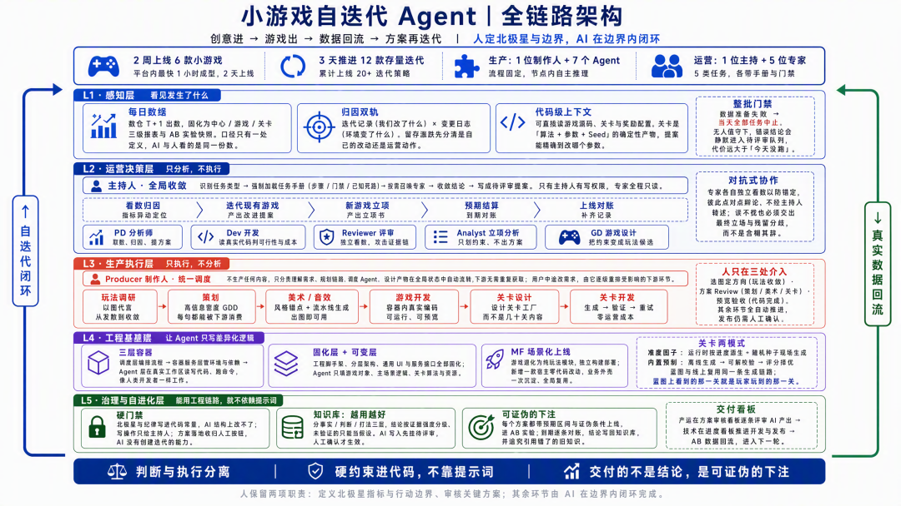
2.1 正文描述的 L1–L5 流转
L1 数据感知层 → L2 运营 Agent（判断当天最值得改哪款游戏，产出带预期的待评审方案）
→ 人工审核 → L3 生产 Agent → L4 游戏容器与模板（变成可上线代码）
→ L5 运营 Agent（设置门禁、沉淀知识、AB 实验到期回收结果）→ 回到 L1 继续下一轮
- L1：把前一天的数据、变更记录和游戏代码整理成可信上下文。
- L2：产出带预期的待评审方案（不是只有结论）。
- L3：接收已确认的方案，完成策划、美术、音效、代码、关卡生产。
- L4：游戏容器与模板承载可上线代码。
- L5：门禁、知识沉淀、实验结果回收（正文称「L5 运营 Agent」；架构图中该层命名为「治理与自进化层」，见附录 B）。
2.2 架构图补充信息（img-06，正文未逐项展开）
图顶部副标题：创意进 → 游戏出 → 数据回流 → 方案再迭代 ｜ 人定北极星与边界，AI 在边界内闭环。 四组概览：2 周上线 6 款（平台内最快 1 小时成型，2 天上线）｜3 天推进 12 款存量迭代（累计 20+ 次存量迭代）｜生产：1 位制作人 + 7 个 Agent（流程固定、节点内自主推理）｜运营：1 位主持 + 5 位专家（5 类任务，各带手册与门禁）。
按架构图的层次命名（与正文 L1–L5 对应关系见附录 B）：
层 定位 主要模块 L1 感知层「看见发生了什么」 把数据变成可信上下文 每日数据（数仓 T+1 出数，固化为中心 / 游戏 / 关卡三级报表与 AB 实验视图，口径只有一次定义，AI 与人看同一份数）；归因双轨（冻结记录「我们改了什么」× 变更日志「环境变了什么」）；代码级上下文（可直接读游戏源码、关卡与奖励配置、关卡库「算法 + 参数 + Seed」的确定性产物，提案能精确到改哪个参数）；整批门禁（数据准备失败则当天所有任务中止，宁可不跑也不让半批数据进入待评审队列） L2 运营决策层「只分析，不执行」 主持人 + 专家团 主持人全局收敛：看数回归 → 识别任务类型 → 强制加载任务手册（步骤 / 门禁 / 已知死路）→ 召回专家 → 收敛结论 → 写成待评审提案；只有主持人有收敛权。任务类型含迭代现有游戏（改进提案）、新游戏立项（立项书）、预期结算、上线对账。专家含看数归因、PD 分析师、Dev 开发（读真实代码）、Reviewer 评审（独立看数、双重证据）、Analyst 专项分析、GD 游戏设计等。对抗式协作：专家各自独立看数以隔离锚定，围绕方案互相论证，分歧在对话中解决 L3 生产执行层「只执行，不分析」 Producer 统一调度 链路：玩法调研（以图收敛）→ 策划（高密度 GDD，每段可被下游直接消费）→ 美术 / 音效（风格锚点 + 流水线生成）→ 游戏开发（容器隔离真实编码，可运行可预览）→ 关卡设计（设计关卡工厂，而非做几关内容）→ 关卡开发（生成 → 验证 → 重试） L4 工程基座「让 Agent 只写差异化逻辑」 固化层 + 可变层 三层容器（每个 Coder 节点配一套工程环境）；工程脚手架、通用接口、服务端能力固化；MF 模块化上线（每个游戏作为独立子应用被宿主动态加载，独立构建、独立发布）；关卡两模式（蓝图与运行时复用同一条生成链路） L5 治理与自进化层「能用工程回滚，就不依赖提示词」 门禁 + 知识 硬门禁（无证据不得推进）；知识库分级（未经验证的只能做回测）；可证伪的下注（方案写预测区间与证伪条件，AB 到期对照并回看引用的旧知识）；交付与看板（方案审核 → 数据看板 → 进度看板 → AB 回流 → 下一轮） 图右侧：人只在三处介入（方向选择 / 方案审核 / 质量验收），其余全部自动推进，发布仍需人工确认。 图底部三条原则：判断与执行分离 ｜ 硬约束进代码，不靠提示词 ｜ 交付的不是结论，是可证伪的下注。 图最底一行：人保留两项职责（定义北极星指标与行动边界、审核关键方案），其余环节由 AI 在边界内闭环完成。
2.3 不做「超级 Agent」：判断与执行分离
| Agent | 输入 | 职责 | 沉淀 |
|---|---|---|---|
| 生产 Agent | 已确认的方案 | 策划、美术、音效、代码、关卡生产 | 游戏架构、资产规范、开发经验 |
| 运营 Agent | 业务报表、AB 实验、变更记录、历史记忆 | 问题归因、优先级判断、决定应该改什么 | 业务指标、实验结果、决策依据 |
职责清晰、相互隔离但可以互相查阅上下文。
3. 小游戏生产 Agent
3.1 规模化生产：两周上线 6 款小游戏
从 7 月开始，用两周时间通过这套 Agent 完成并发布 6 款小游戏（原文表格列出：忍者跳跃、盖楼小游戏、飞机大战、贪吃蛇大作战、打地鼠、祖玛，每款附平台截图）。
- 最快的一款在 Agent 平台内走完整生产流程约 1 小时；算上测试、验收和上线流程，从创意到正式上线仅用 2 天。
- 生产关系变化：参与生产的不限于开发同学，测试、PD、运营也能用自己的 idea 制作小游戏，从需求提出者、协作者转变为直接的生产者。
3.2 系统架构：Producer 统一调度 Multi-Agent
两大技术栈：
| 技术栈 | 职责 |
|---|---|
| LangGraph | 全局流程编排与多 Agent 协调 |
| Claude Agent SDK（tarot-code-agent） | 在远程容器中执行真实的代码生成 |
以 Producer（制作人） 为核心调度节点，协调 6 个专业 Agent，生产链路：
Gameplay Research → Planner → Art Designer → Game Coder → Level Designer → Level Coder
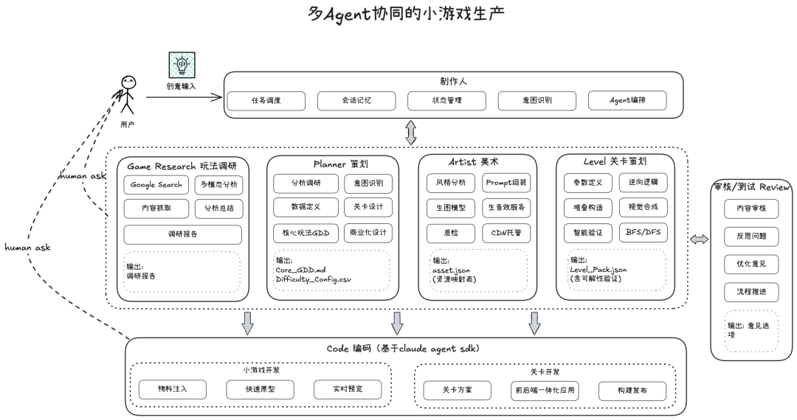
架构图转录（img-14）： - 制作人：任务调度、会话记忆、状态管理、意图识别、Agent 编排。 - Game Research 玩法调研：Google Search、多模态分析、内容抓取、分析总结 → 输出调研报告。 - Planner 策划：分析调研、意图识别、数据定义、关卡设计、核心玩法 GDD、商业化设计 → 输出
Core_GDD.md、Difficulty_Config.csv。 - Artist 美术：风格分析、Prompt 组装、生图模型、生音效服务、质检、CDN 托管 → 输出asset.json（资源映射表）。 - Level 关卡策划：参数定义、逆向逻辑、难题构造、视觉合成、智能验证、BFS/DFS → 输出Level_Pack.json（含可解性验证）。 - 审核 / 测试 Review（右侧）：内容审核、反思问题、优化意见、流程推进；用户可通过human ask介入各 Agent。 - Code 编码（基于 claude agent sdk）：小游戏开发（物料注入、快速原型、实时预览）+ 关卡开发（关卡方案、前后端一体化应用、构建发布）。
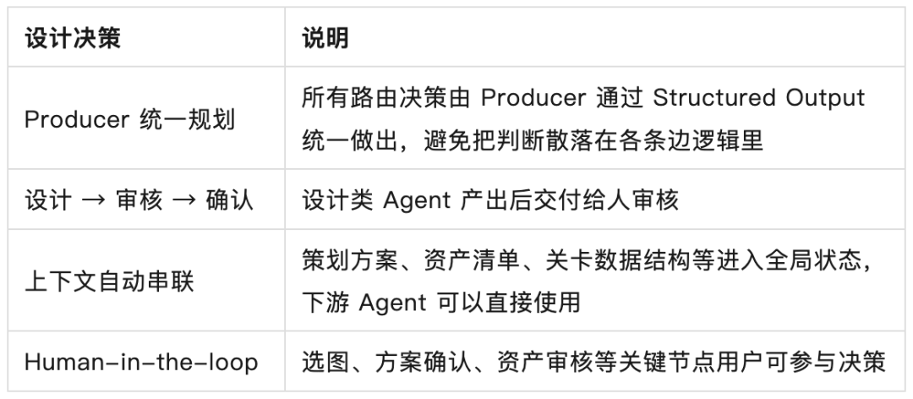
| 设计决策 | 说明 |
|---|---|
| Producer 统一规划 | 所有路由决策由 Producer 通过 Structured Output 统一做出，避免把判断散落在各条边逻辑里 |
| 设计 → 审核 → 确认 | 设计类 Agent 产出后交付给人审核 |
| 上下文自动串联 | 策划方案、资产清单、关卡数据结构等进入全局状态，下游 Agent 可以直接使用 |
| Human-in-the-loop | 选图、方案确认、资产审核等关键节点用户可参与决策 |
3.3 六个专业 Agent 详解
① Producer（制作人）— 全局调度中枢
不直接生产任何内容，只专注理解需求、规划链路、调度 Agent；分析当前项目状态后按阶段推进，用户中途介入修改时动态调整后续计划。示例：用户说「新增一种敌机」→ 先调度策划 Agent 更新资产清单 → 再调度资产 Agent 生成美术资产 → 最后调度开发 Agent 执行代码开发。
② Gameplay Research（玩法调研）— 从创意到调研报告
一个创意往往模糊（「做一个倒水小游戏」可能对应写实物理模拟、卡通益智闯关、解压 ASMR 等截然不同的类型），核心任务是帮用户从发散收敛到明确的玩法方向：
- 从发散到收敛：不要求用户用文字精确描述，而是让用户从真实游戏截图中选择（先搜索、后选图）。
- 游戏规则提炼：直接让 LLM 分析选中的截图，从视觉中提取核心玩法机制，作为内容搜索关键词，精准定位详细玩法规则与通关攻略。
- 筛选美术资产模板：从选中图片中筛出最适合的 2–3 张参考图，贯穿到后续 Art Designer 生成流程。
原文附「小游戏 / 玩法调研」示例表：飞机大战、忍者跳跃、麻将消消乐（各附调研截图）。
③ Planner（策划 Agent）— 策划方案生成
把调研结果转化为信息密度高、可直接使用的游戏设计文档（GDD）：
- 信息密度优先：每一段描述都必须能被下游 Agent 直接消费——游戏实体和操作规则给 Game Coder 实现玩法、资产清单给 Art Designer 生图、关卡设计给 Level Designer 定配置结构。如果一段描述不能映射到具体开发动作，就不写。
- 两类资产需求：程序资产（游戏实体、动画状态机、粒子特效等需代码实现的对象）；素材资产（角色立绘、背景、UI 图标、音频等需生成的素材）。
- 定义美术风格：先确定整体风格、主色调、参考方向（「扁平卡通」「像素复古」「3D 写实」），作为生图的全局约束，避免风格不统一、后期返工。
④ Art & Audio Designer（资产 Agent）— AI 生图、生音频
执行类 Agent，直接输出文件，不再多写一层方案。
美术资产最难的不是「能不能生成图片」，而是生成结果能否稳定进入工程，因此用了几层约束：
| 约束 | 内容 |
|---|---|
| 三层风格锚点 | 基准风格 Base（调研阶段推荐的风格参考图）；整体风格 Style（首张生成素材作为锚点，后续资产以此为参考）；代表图 Entity（有多种状态/关系的游戏对象，用标准态作参考图） |
| 页面框架图 & 布局分析 | 所有元素完成后合成页面框架图，再用多模态模型分析游戏区布局、输出结构化描述，让 Game Coder 读到布局意图，而不是拿零散图片猜位置 |
| 四种执行模式 | 首次全量生成 / 用户指定局部重生 / 续生失败资产 / 回答美术咨询；由 LLM 做意图分类，局部修改不必从头生成 |
美术资产流程表（原文）：资产规划（LLM 依据 GDD 列出完整资产，含朝向图、拆分图，先规划再生图）→ 美术资产生成（两类锚点保证风格一致）→ 美术资产矫正（用工程能力处理 AI 生图无法精准对齐的问题）。原文附「游戏 / 美术资产」示例表：水果忍者、祖玛、流沙方块。
音频资产设计：音效 Agent 采用 ReAct 模式，LLM 分析 GDD 后自主决定生成哪些音效；按 BGM / 交互音效 / 状态音效 / UI 音效分类输出，Game Coder 可直接按场景引用。关键优势段补充：生图走 Gemini 生图 + 抠图，音效通过 Tool Use 逐个调用可灵 AI 生成。
⑤ Level Designer（关卡设计 Agent）— 设计关卡工厂而非关卡
不逐一设计每一关，而是定义数据结构、生成算法、验证策略和难度曲线。核心是让每一关成为确定性产物：
算法 + 参数 + Seed → 每一关（AI 看得懂、改得动、改完可验证）
关卡方案严格限定为 5 章：gameType、数据结构、生产方式、验证方式、难度曲线；每章都是 Level Coder 的直接输入，且优先基于 Game Coder 已实现的 TypeScript 接口设计，确保产出即可落地。
关卡生成模式按两个判断选择：① 关卡生成后是否必然有解？② 生成 & 可解性判定是否耗时？
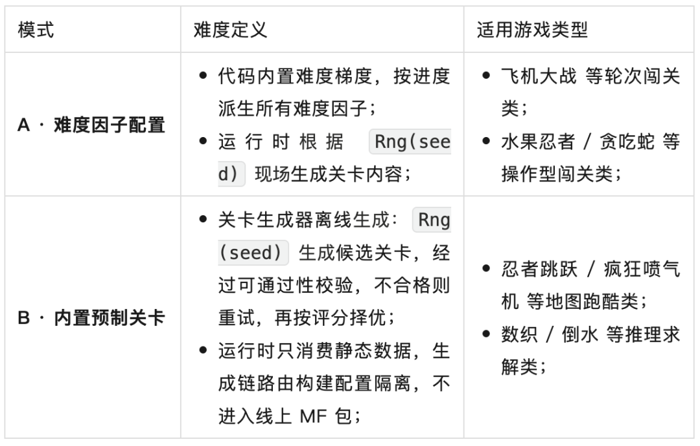
| 模式 | 难度定义 | 适用游戏类型 |
|---|---|---|
| A · 难度因子配置 | 代码内置难度梯度，按进度派生所有难度因子；运行时根据 Rng(seed) 现场生成关卡内容 |
飞机大战等轮次闯关类；水果忍者 / 贪吃蛇等操作型闯关类 |
| B · 内置预制关卡 | 关卡生成器离线生成：Rng(seed) 生成候选关卡，经过可通过性校验，不合格则重试，再按评分择优；运行时只消费静态数据，生成链路由构建配置隔离，不进入线上 MF 包 |
忍者跳跃 / 疯狂喷气机等地图跑酷类；数织 / 倒水等推理求解类 |
两种模式共同遵守一条 MF 契约：宿主默认只下发当前关卡数 & 总关卡数，游戏依据通关进度在本地动态生成关卡，或直接使用内置关卡。
关卡迭代自闭环（确定性生成带来的三项能力）：
- 可溯源：任意一天、任意一关都能还原生成过程，问题关卡可通过 Seed 和难度因子精确复现。
- 可改造：LLM 分析层拿到真实生成代码（不只是配置值），提案可明确到参数及目标值；执行层修改源码后，可通过蓝图可视化和 Seed 逐关 diff 回归。
- 可验收：蓝图与运行时复用同一条生成链路，蓝图中看到的关卡就是玩家实际进入的关卡。
⑥ Game Coder & Level Coder — 远程容器编码
链路中唯一需要真实开发环境的 Agent：不只输出代码文本，还要读写文件、安装依赖、启动开发服务器。
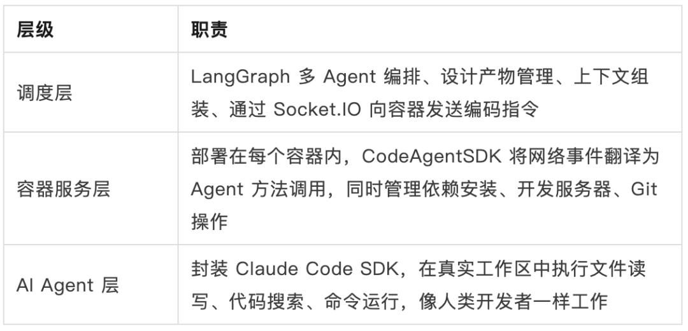
| 层级 | 职责 |
|---|---|
| 调度层 | LangGraph 多 Agent 编排、设计产物管理、上下文组装、通过 Socket.IO 向容器发送编码指令 |
| 容器服务层 | 部署在每个容器内，CodeAgentSDK 将网络事件翻译为 Agent 方法调用，同时管理依赖安装、开发服务器、Git 操作 |
| AI Agent 层 | 封装 Claude Code SDK，在真实工作区中执行文件读写、代码搜索、命令运行，像人类开发者一样工作 |
3.4 MF 场景化：模块联邦，动态可插拔
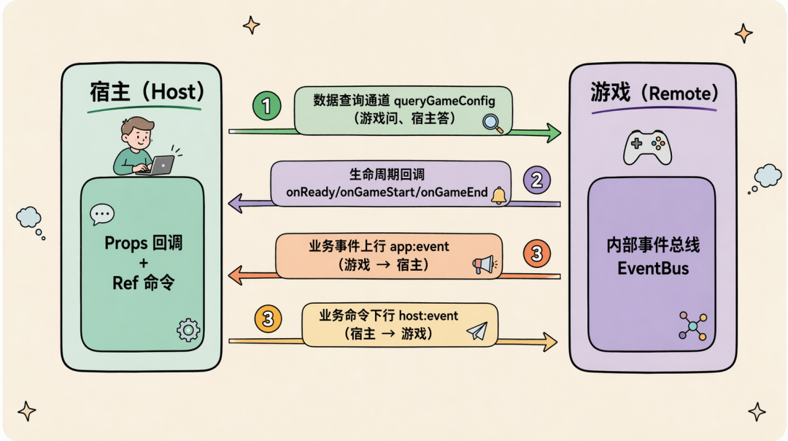
宿主（Host）持有 Props 回调 + Ref 命令，游戏（Remote）持有内部事件总线 EventBus，协议三部分：
| # | 通道 | 方向 | 说明 |
|---|---|---|---|
| ① | 统一数据查询通道 queryGameConfig |
游戏问、宿主答 | 不为每种数据设计一个接口，而是用一个通用异步函数承载所有数据请求；宿主侧自由决定数据来源，游戏侧只负责消费 |
| ② | 标准生命周期回调 | 游戏 → 宿主（单向通知） | 模板统一封装 onReady / onGameStart / onGameEnd，游戏在关键节点通知宿主 |
| ③ | 双向事件协议 | 上行 + 下行 | app:event（游戏 → 宿主）：emit('app:event', name, payload) 发出，宿主 onEvent(name, payload) 接收；host:event（宿主 → 游戏）：ref.sendHostEvent(name, payload) 发出，游戏 on('host:event', handler) 接收。所有额外业务事件都走这两条固定通道 |
固化层 + 可变层（预置在壳应用中，让 Coder 只关注差异化逻辑）：
| 壳应用 | 固化层 | 可变层 |
|---|---|---|
| 小游戏壳应用 | Phaser + React 工程脚手架、Controller 分层架构（业务/游戏/音频）、通用 UI 框架（Loading/导航栏/功能面板）、状态管理机制、通用接口设计（关卡查询推进、道具 CRUD）、资源加载链路、事件总线 | 游戏对象和管理器、主场景逻辑、具体 UI 内容与交互、关卡配置数据、道具效果、资源定义 |
| 关卡生成壳应用 | Period → Day → Level 三级周期配置、通用服务接口（关卡/道具/广告链路）、前端路由框架和 gameType 注册机制、Schema 驱动的配置体系、构建发布流程 | 具体游戏的关卡生成算法、验证逻辑、可视化页面、关卡 JSON 结构、参数曲线 |
两个好处：Coder 不用从零搭建工程基础设施；服务端能力完全复用（关卡查询、关卡推进、道具管理、广告打通等接口新游戏无需重复开发）。
3.5 画布视图 & 经典视图：两种交互形态
多 Agent 生产会话里同时存在调研报告、策划方案、美术资产、音频资产、关卡方案和游戏容器，单一交互方式难以兼顾纵深操作与全局审查，因此提供两种视图并允许随时切换：
| 维度 | 经典视图 | 画布视图 |
|---|---|---|
| 交互设计 | 对话 + 产物面板（Copilot 范式） | 节点 + 连线（Workflow 范式） |
| 信息组织 | 线性编排，聚焦单一环节 | 空间并列，展示全局拓扑 |
| 使用场景 | 首次生产、单环节审阅 | 全局审查、迭代修改、精细调整 |
（原文另附「页面视觉」两列截图，分别对应两种视图的界面。）
3.6 关键优势与核心特点
架构层面：Workflow 与自主推理的融合
纯 Workflow 每步固定、灵活性差；纯自主 Agent 全靠模型决策、不可控且 token 消耗大。LangGraph + Claude Agent SDK 的组合取两者平衡：
- LangGraph 提供「可控的流程骨架」：主干确定（调研→策划→美术→编码→关卡→关卡编码），阶段间流转、审核、暂停恢复由结构硬性保证，不依赖模型判断；即使模型偶尔跑偏，整体流程也不失控。
- 子 Agent 内部充分发挥自主推理：Planner 自主决定 GDD 章节深度、Art Designer 自主分析依赖关系与生成顺序、Level Designer 自主判断是否需要提问；流程不干涉节点内部推理。
- 两个引擎各取所长：设计类 Agent 直接调 LLM API（响应快、成本低）；Coder 类 Agent 通过 Claude Agent SDK 在隔离容器中执行，拥有完整文件系统与工具链；设计产物通过全局状态自动流入 Coder 的系统提示词，无需额外「交接」。
- Human-in-the-loop 时机精心设计：只在三类关键节点暂停，其余全自动——方向选择（调研阶段选图）、方案确认（策划/关卡/美术产出后 Review）、质量验收（代码完成后预览）。
子 Agent 层面的针对性设计：玩法调研「以图代言」、策划方案「信息密度最大化」、美术资产「生产线式生图 Workflow」、关卡设计「信息密度与可执行性并重」。
工程基建：三层容器架构 + 固化框架与可变内容。
4. 小游戏运营：从数据到决策，再到自进化
4.1 规模化验证：12 款游戏、20+ 迭代
8 月底 Agent 自运营能力上线后，共上线 20+ 次游戏迭代和 1 款新游戏。首周先对线上 12 款小游戏做全面迭代：
- 95%+ 的迭代呈正向效果，40%+ 的迭代为全指标正向；
- 因分析和开发侧都已打通自动化流程，这 12 款游戏迭代从方案产出到开发上线只用 3 天。
原文附「小游戏 / 迭代方案 / 迭代效果」示例表：趣味数独、忍者跳跃、一箭又一箭（均标注「所有指标均正向」，各附方案与效果截图）。
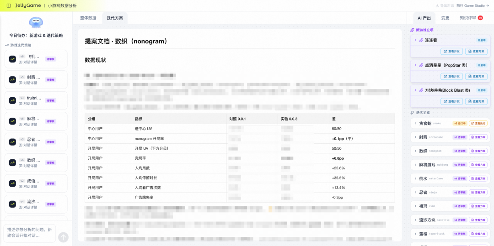
界面信息：平台名「JellyGame 小游戏数据分析」，含「整体数据 / 迭代方案」页签与「AI 产出 / 变更 / 知识评审」入口；提案文档按游戏组织（示例「数织 nonogram」），「数据现状」表按中心用户 / 开局用户分组，指标含进中心 UV、开局率、开局 UV（下方分母）、完局率、人均局数、人均停留时长、人均广告次数、广告损失率等，按对照 / 实验 / 差三列对比；左侧为「今日待办：新游戏 & 迭代策略」对话列表，右侧为「新游戏立项」与「迭代全览」游戏清单。具体数值多已打码，本整理不转录未公开数字。
4.2 Agent Team：主持人 + 专家团的对抗模式
为什么不用单 Agent：运营分析没有标准答案，单 Agent 容易把方案做得过于简单、把原因归到无法行动的客观因素上，或给出缺少证据、无法落地的结论。
机制：每个专家先独立看数，形成自己的上下文和证据链，避免过早锚定；不同任务有各自的系统 Prompt，明确步骤、门禁和已知死路，并在开工时强制注入；专家围绕具体方案互相论证，分歧在对话中解决，最后由主持人收敛，不把未经处理的争论直接抛给用户。
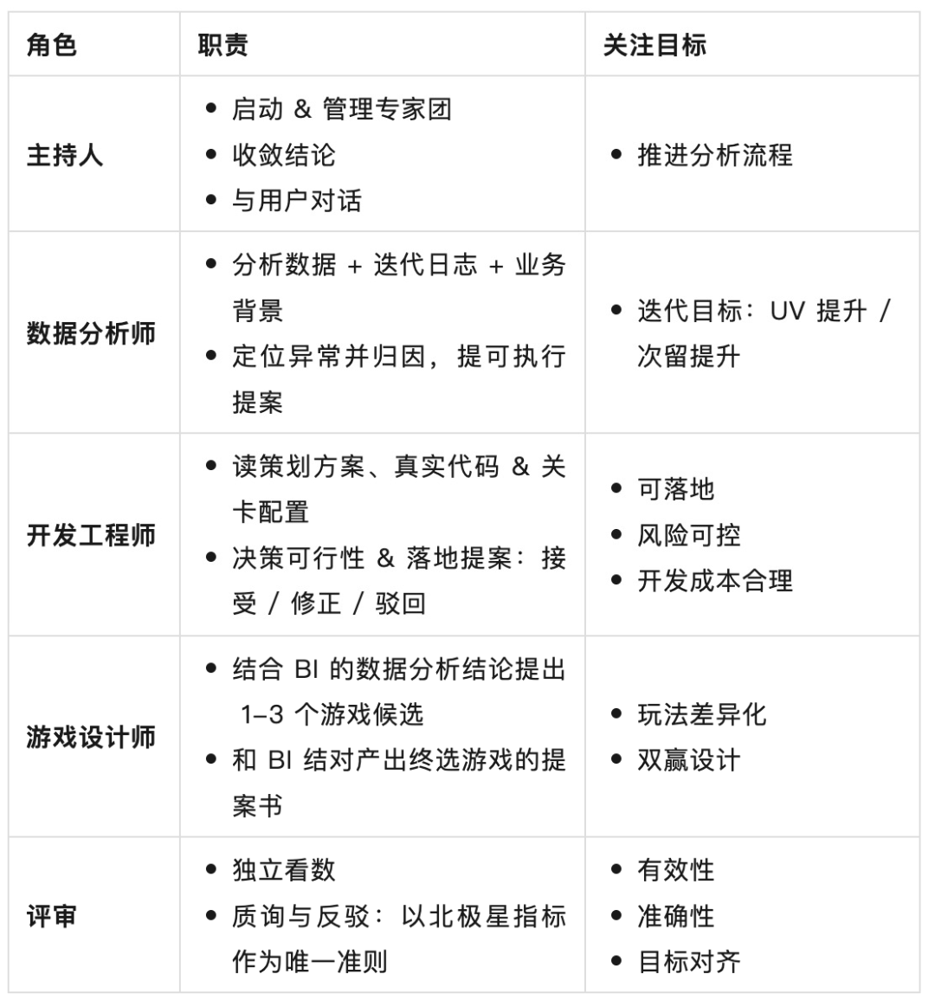
| 角色 | 职责 | 关注目标 |
|---|---|---|
| 主持人 | 启动 & 管理专家团；收敛结论；与用户对话 | 推进分析流程 |
| 数据分析师 | 分析数据 + 迭代日志 + 业务背景；定位异常并归因，提可执行提案 | 迭代目标：UV 提升 / 次留提升 |
| 开发工程师 | 读策划方案、真实代码 & 关卡配置；决策可行性 & 落地提案：接受 / 修正 / 驳回 | 可落地、风险可控、开发成本合理 |
| 游戏设计师 | 结合 BI 的数据分析结论提出 1–3 个游戏候选；和 BI 结对产出终选游戏的提案书 | 玩法差异化、双赢设计 |
| 评审 | 独立看数；质询与反驳：以北极星指标作为唯一准则 | 有效性、准确性、目标对齐 |
主要产出两类结果：现有游戏迭代提案、新游戏立项书（原文各附界面截图）。
4.3 每日定时任务：让分析系统自己跑起来
对话式 Agent「问什么答什么」，但运营日常不应与 AI 过多实时对话，而应以决策者身份判断结论：前一天数据有什么变化、哪些实验预期已到期、今天最值得改哪款游戏。流程固定后编排成自动任务。
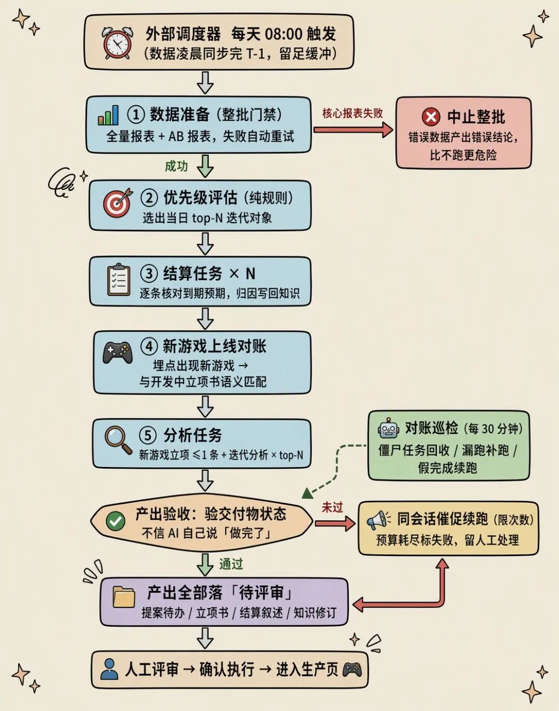
流程图转录（img-55）：外部调度器每天 08:00 触发（数据凌晨同步完 T-1，留足缓冲）→ ① 数据准备（整批门禁）：全量报表 + AB 报表，失败自动重试；核心报表失败则中止整批（错误数据产出错误结论，比不跑更危险）→ ② 优先级评估（纯规则）：选出当日 top-N 迭代对象 → ③ 结算任务 × N：逐条核对到期预期，归因写回知识 → ④ 新游戏上线对账：埋点出现新游戏 → 与开发中立项书语义匹配 → ⑤ 分析任务：新游戏立项 ≤1 条 + 迭代分析 × top-N → 产出验收：验交付物状态（「不信 AI 自己说做完了」）→ 通过则产出全部落「待评审」（提案待办 / 立项书 / 结算叙述 / 知识修订）→ 人工评审 → 确认执行 → 进入生产页。 旁路两处：对账巡检（每 30 分钟）回收僵尸任务 / 漏跑补跑 / 假完成续跑；验收未过则同会话催促续跑（限次数），预算耗尽标失败、留人工处理。
正文对应强调的四道门禁：
| 门禁 | 内容 |
|---|---|
| 数据整批验收 | 核心报表构建失败，当天所有任务中止；宁可不跑，也不让错误数据生成结论 |
| 验收真实状态 | 会话正常退出不代表任务完成；系统检查立项书是否新建、提案是否更新、待结算清单是否清空。未通过时在同一会话中催促续跑，预算耗尽后才标记失败并交给人工 |
| 自动巡检 | 每半小时巡检一次，回收假死任务、补跑漏掉的批次，纠正「看起来完成、实际没有交付物」的状态 |
| 统一交付标准 | 自动化只省掉中途等待同意的步骤；查重、读代码和证据要求与交互式流程一致，产物进入待评审队列，评审权仍在人手里 |
4.4 能力自进化：预期收益 → 真实数据回收
核心认知：如果系统持续生成方案，它不会因为跑得更多就自动变好。因此把 Agent 的交付物重新定义为一次可证伪的「下注」：每个策略都要写明预测区间、引用了哪些知识、什么结果会证伪当前判断。数据回收时逐条对账预期与实际结果，并追溯本次判断引用的知识；如果知识本身有问题，就进入后续治理，而不是只把实验标记为成功或失败。
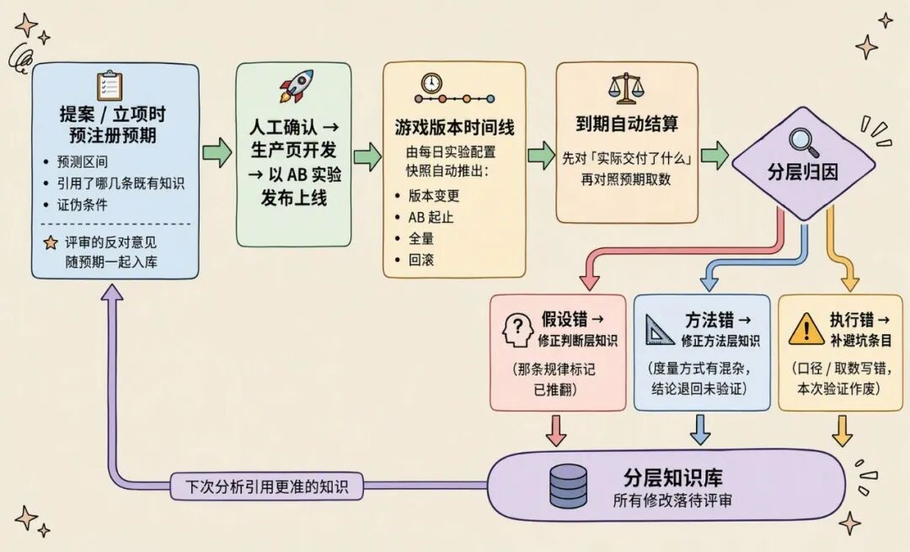
流程图转录（img-56）： 提案 / 立项时预注册预期（预测区间、引用了哪几条既有知识、证伪条件；评审的反对意见随预期一起入库）→ 人工确认 → 生产页开发 → 以 AB 实验发布上线 → 游戏版本时间线（由每日实验配置快照自动推出：版本变更、AB 起止、全量、回滚）→ 到期自动结算（先对「实际交付了什么」，再对照预期取数）→ 分层归因分三类错误： - 假设错 → 修正判断层知识（那条规律标记已推翻） - 方法错 → 修正方法层知识（度量方式有混杂，结论退回未验证） - 执行错 → 补避坑条目（口径 / 取数写错，本次验证作废）
三类修改统一进入分层知识库（所有修改落待评审），再回到「下次分析引用更准的知识」，形成闭环。
4.5 记忆系统：分层保存约束、经验、流程和事件
实验回收的经验需要合理保存，也要在合适的任务里取出来。系统采用四层记忆，把不同性质的信息放进不同成本、容量和检索方式的容器。
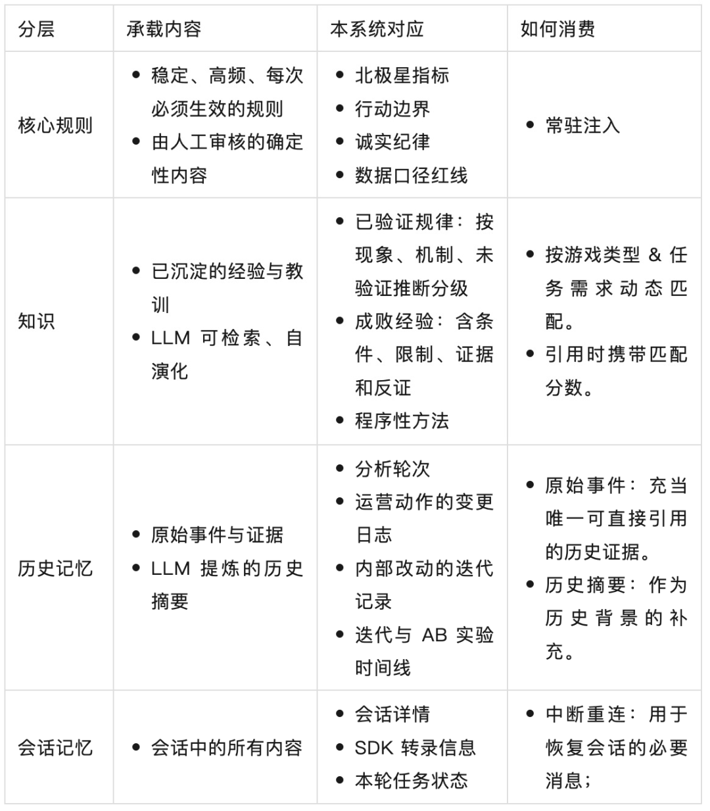
| 分层 | 承载内容 | 本系统对应 | 如何消费 |
|---|---|---|---|
| 核心规则 | 稳定、高频、每次必须生效的规则；由人工审核的确定性内容 | 北极星指标、行动边界、诚实纪律、数据口径红线 | 常驻注入 |
| 知识 | 已沉淀的经验与教训；LLM 可检索、自演化 | 已验证规律（按现象、机制、未验证推断分级）；成败经验（含条件、限制、证据和反证）；程序性方法 | 按游戏类型 & 任务需求动态匹配；引用时携带匹配分数 |
| 历史记忆 | 原始事件与证据；LLM 提炼的历史摘要 | 分析轮次、运营动作的变更日志、内部改动的迭代记录、迭代与 AB 实验时间线 | 原始事件充当唯一可直接引用的历史证据；历史摘要作为历史背景的补充 |
| 会话记忆 | 会话中的所有内容 | 会话详情、SDK 转录信息、本轮任务状态 | 中断重连时用于恢复会话的必要消息 |
一条记忆的正文只保留「结论 + 判断依据」，不保存一次性细节和容易过期的时效数值。每条记忆还带有治理元数据：
| 元数据 | 说明 |
|---|---|
| 作用域 | 适用于单款游戏，还是可以跨游戏复用 |
| 来源证据 | 来自哪次结算、哪个会话 |
| 证据等级 | 现象、机制或未验证推断；低等级内容禁止使用「显著」「必然」等强断言 |
| 置信度与状态 | 候选、生效或已失效 |
| 版本链 | 可回溯到生成这条记忆时的系统状态 |
5. 总结与展望
当前成果：过去几个月在淘天互动业务中跑通了小游戏从选型、生产到上线迭代的完整链路。
当前限制：系统受游戏模式和关卡类型限制，优化主要以小游戏主体为主。
下一步：把生产与迭代扩展到更广义的互动玩法——围绕业务目标和用户关系，组合抽奖、社交裂变、组队 PK、任务协作等机制，生成相应的规则、内容与体验，并根据用户反馈持续调整和验证。
评价标准：最终要看玩家是否愿意参与、是否觉得好玩、是否愿意再来，以及能否带来业务增量。目标是把一次性交付的互动项目，变成可持续探索玩法、理解用户并优化效果的互动服务。
6. 团队介绍
- 作者：辰霁、成禹，淘天集团业务技术-营销&交易技术团队。
- 团队职责：承担淘宝天猫电商全链路交易与营销技术攻坚，推动 AI 技术能力与电商业务实践深度融合。
- AI 能力建设：围绕互动玩法 & 体验，覆盖多 Agent 编排、上下文流转、全链路自迭代、数据决策闭环、记忆系统等链路，把玩法创意、内容生产、研发交付和运营迭代连接起来。
- 业务落地：覆盖淘宝秒杀、淘宝特价版 App，主导 618、双 11 等大促场景多个高价值项目，将 AI 能力规模化渗透至秒杀、导购、交易、搜索、用增等核心场景。
- 协同创新：小游戏 Agent 打破研发与业务角色之间的生产边界，让 PD、运营、测试等角色从需求提出者转变为直接的生产者，在提升生产效率的同时重塑互动业务的生产关系。
- 文末拓展阅读栏目：3DXR 技术｜终端技术｜音视频技术｜服务端技术｜技术质量｜数据算法。
附录 A：配图索引（60 张，已全部归档至 assets/）
| 编号 | 位置 / 内容 | 编号 | 位置 / 内容 |
|---|---|---|---|
| 01 | 文首头图（动图） | 31 | 关卡工厂：算法 + 参数 + Seed 示意 |
| 02 | 导语装饰图 | 32 | 关卡生成模式 A/B 对照表 |
| 03 | 阶段业务结果总览（2026 年 8 月，含各项百分比） | 33 | 关卡迭代自闭环示意 |
| 04 | 第 1 章标题装饰图 | 34 | Coder 远程容器 / 三层架构示意 |
| 05 | 第 2 章标题装饰图 | 35–36 | MF 场景化：模块联邦示意 |
| 06 | 小游戏自迭代 Agent 全链路架构（L1–L5） | 37 | 宿主与游戏通信协议图 |
| 07 | 第 3 章标题装饰图 | 38 | 生命周期回调示意 |
| 08–13 | 6 款小游戏平台截图（忍者跳跃、盖楼、飞机大战、贪吃蛇、打地鼠、祖玛） | 39–42 | 经典视图 / 画布视图页面视觉对比截图 |
| 14 | 多 Agent 协同的小游戏生产架构 | 43 | 三层容器架构职责表 |
| 15 | 生产链路四条设计决策表 | 44 | 章节装饰图 |
| 16–17 | Producer 动态调度与「新增敌机」示例 | 45–50 | 12 款游戏迭代方案与效果截图（含 JellyGame 平台界面） |
| 18 | 玩法调研流程示意 | 51 | Agent Team 角色职责表 |
| 19–21 | 玩法调研示例截图（飞机大战、忍者跳跃、麻将消消乐） | 52 | 专家团对抗协作示意 |
| 22 | Planner / GDD 产出示意 | 53–54 | 两类产出：迭代提案 / 新游戏立项书截图 |
| 23–24 | 资产 Agent 与美术资产设计流程 | 55 | 每日定时任务完整流程图 |
| 25–27 | 资产规划 / 生成 / 矫正三流程截图 | 56 | 可证伪下注与分层归因闭环图 |
| 28–30 | 美术资产示例（水果忍者、祖玛、流沙方块） | 57–58 | 记忆系统示意 / 四层记忆分层表 |
| 59 | 章节装饰图 | 60 | 文末尾部图 |
原始图片 URL 与下载清单见 assets/_图片索引.txt。
附录 B：口径校注（保证准确性）
整理中发现原文存在几组统计范围不同或命名不同的表述，此处如实标注，不擅自合并或改写：
- 数字口径（最易混淆）：图 3 是「2026 年 8 月阶段业务结果总览」（单月 5 种类型 / 9 款新游戏、12 款迭代 / 20+ 次迭代）；正文 3.1 是「生产 Agent 验证」（7 月起 2 周 6 款）；正文 4.1 是「运营 Agent 验证」（8 月底起首周 12 款、共 20+ 次迭代 + 1 款新游戏）；标题取生产与运营各一个代表性数字。四者统计范围与时间窗不同，不能相加，也不能互相验证。本整理按来源分别列出。
- L5 命名：正文 2.1 把第五层称为「L5 运营 Agent」（设置门禁、沉淀知识、回收结果）；架构图 img-06 把第五层称为「治理与自进化层」，并把「L4」标为「工程基座」而非「游戏容器与模板」。两套命名描述的是同一条链路的不同切面，本整理在 2.1 保留正文口径、2.2 保留图中口径。
- Agent 数量：架构图顶部标注「生产：1 位制作人 + 7 个 Agent」「运营：1 位主持 + 5 位专家」；正文 3.2 列出 6 个专业 Agent 节点（Gameplay Research → Planner → Art Designer → Game Coder → Level Designer → Level Coder，美术/音效合称资产 Agent）；图 51 角色表列 4 类专家 + 主持人。差异来自是否把美术与音效拆分、是否把评审/分析角色单独计数，本整理不强行统一。
- 实验数据脱敏：图 45–50 等平台截图中的多数指标数值已打码，本整理只描述表格结构与指标名，不转录、不推算未公开数值；图 3 中标注的百分比为原文公开数据，照录。
- 图 3 效果指标：游戏对端效果实验观测（次日主动打开 +2.5%、停留时长 +23.5%、订单 +1.3%、GMV +3%）；迭代效果实验观测（停留时长 +15.3%、人均局数 +6.4%、通关率 +1.7%、全通率 +1.1%）。原文未说明这两组与正文 95%+ / 40%+ 的换算关系，故并列呈现，不作推导。
附录 C：关键数字速查
| 数字 | 含义 |
|---|---|
| 2～3 周 / 6 天 | 改造前上线一款新小游戏所需周期 / 创意到原型最快耗时 |
| 2 周 / 6 款 / 1 小时 / 2 天 | 生产 Agent：两周上线 6 款；最快一款平台内约 1 小时走完生产流程；含测试验收到正式上线最快 2 天 |
| 12 款 / 3 天 / 20+ 次 / 1 款 | 运营 Agent：首周迭代款数、方案到上线耗时、累计迭代次数、同期新游戏数 |
| 95%+ / 40%+ | 迭代正向比例 / 全指标正向比例 |
| 10+ 款 / 三级 | 运营需同时分析的游戏数 / 场域·游戏·关卡三级数据 |
| 5 种 / 9 款 / 12 款 / 20+ 次 | 图 3：2026 年 8 月单月上新类型数、新游戏数、迭代款数、迭代次数 |
| +2.5% / +23.5% / +1.3% / +3% | 图 3 游戏对端效果：次日主动打开 / 停留时长 / 订单 / GMV |
| +15.3% / +6.4% / +1.7% / +1.1% | 图 3 迭代效果：停留时长 / 人均局数 / 通关率 / 全通率 |
| L1–L5 | 全链路五层架构 |
| 6 / 7 / 5 | 正文生产链路专业 Agent 数 / 架构图生产 Agent 数 / 架构图运营专家数 |
| 2–3 张 / 1–3 个 | 玩法调研筛选的美术参考图数 / 游戏设计师提出的候选游戏数 |
| 5 章 / 2 种 / 3 项 | 关卡方案章节数 / 关卡生成模式数 / 关卡自闭环能力数 |
| 3 层 / 4 层 / 4 道 / 3 类 | 容器架构层数 / 记忆层数 / 无人值守门禁数 / HITL 关键节点数 |
| 3 部分 / 每 30 分钟 / 08:00 | 通信协议组成 / 自动巡检频率 / 每日任务触发时间 |
| 4 种 / 4 类 | 美术执行模式数 / 音效输出分类数 |
核心框架速查
配套：
01-全文整理.md（完整内容）｜03-原文全文.md（原文存档） 用途：把原文散落在正文与 60 张配图里的框架、数字、流程沉淀成可查的表，便于复盘、评审或迁移。
1. 系统定位与分工
创意进 → 游戏出 → 数据回流 → 方案再迭代 人定北极星与边界，AI 在边界内闭环
| 角色 | 保留职责 |
|---|---|
| 人 | ① 定义北极星指标与行动边界 ② 审核关键方案 |
| AI | 策略、开发、数据归因 |
| Agent | 输入 | 职责 | 沉淀 |
|---|---|---|---|
| 生产 Agent | 已确认的方案 | 策划、美术、音效、代码、关卡生产 | 游戏架构、资产规范、开发经验 |
| 运营 Agent | 报表、AB 实验、变更记录、历史记忆 | 问题归因、优先级判断、决定改什么 | 业务指标、实验结果、决策依据 |
判断与执行分离，职责隔离但可互查上下文；不做包揽一切的「超级 Agent」。
2. 数字口径速查（四组范围不同，不可相加）
| 来源 | 生产 | 运营 | 效果 |
|---|---|---|---|
| 图 3「2026 年 8 月阶段业务结果总览」 | 单月 5 种类型 / 9 款新游戏 | 单月迭代 12 款、20+ 次迭代 | 对端：次日主动打开 +2.5%、停留 +23.5%、订单 +1.3%、GMV +3%；迭代：停留 +15.3%、人均局数 +6.4%、通关率 +1.7%、全通率 +1.1% |
| 正文「生产验证」（7 月起） | 2 周 6 款；平台内最快约 1 小时；含上线最快 2 天 | — | 生产角色扩展到测试 / PD / 运营 |
| 正文「运营验证」（8 月底起） | 同期 1 款新游戏 | 首周 12 款、共 20+ 次迭代；方案到上线 3 天 | 95%+ 迭代正向、40%+ 全指标正向 |
| 标题 | 2 周 6 款 | 3 天 12 款 | — |
改造前基线：上线一款新小游戏需 2～3 周，创意到原型最快 6 天；运营需同时看 10+ 款游戏 × 场域/游戏/关卡三级数据。
3. 全链路 L1–L5
| 层 | 正文口径 | 架构图口径 | 核心动作 |
|---|---|---|---|
| L1 | 数据感知层 | 感知层「看见发生了什么」 | 每日数据（数仓 T+1、三级报表、AB 视图，口径一次定义）、归因双轨（冻结记录 × 变更日志）、代码级上下文、整批门禁 |
| L2 | 运营 Agent | 运营决策层「只分析，不执行」 | 判断当天最值得改哪款游戏，产出带预期的待评审方案；主持人 + 专家团，对抗式论证 |
| L3 | 生产 Agent | 生产执行层「只执行，不分析」 | 接收已确认方案，完成策划/美术/音效/代码/关卡生产；Producer 统一调度 |
| L4 | 游戏容器与模板 | 工程基座「让 Agent 只写差异化逻辑」 | 三层容器、固化层 + 可变层、MF 模块化上线、关卡两模式 |
| L5 | 运营 Agent | 治理与自进化层 | 设置门禁、沉淀知识、AB 到期回收结果；硬门禁 + 知识库分级 + 可证伪下注 |
底部三原则：判断与执行分离 ｜ 硬约束进代码，不靠提示词 ｜ 交付的不是结论，是可证伪的下注。 人只在三处介入：方向选择 / 方案审核 / 质量验收；发布仍需人工确认。
4. 生产链路：Producer + 6 个专业 Agent
Gameplay Research → Planner → Art Designer → Game Coder → Level Designer → Level Coder
| Agent | 关键设计 | 主要产物 |
|---|---|---|
| Producer | 不生产内容，只理解需求 / 规划链路 / 调度；路由决策通过 Structured Output 统一做出；中途改需求动态调整下游 | 全局状态、执行计划 |
| Gameplay Research | 「以图代言」：先搜索后选图；LLM 从截图提炼玩法规则作搜索关键词；筛 2–3 张美术参考图 | 调研报告 |
| Planner | GDD 信息密度优先（不能映射到开发动作就不写）；程序资产 / 素材资产两类；先定美术风格 | Core_GDD.md、Difficulty_Config.csv |
| Art & Audio | 三层风格锚点（Base / Style / Entity）；页面框架图 + 多模态布局分析；四种执行模式（全量 / 局部重生 / 续生失败 / 美术咨询）；音效用 ReAct 自主规划、按 BGM/交互/状态/UI 分类 | asset.json（资源映射表）、图片与音频文件 |
| Game Coder | Claude Agent SDK 在隔离容器中真实读写文件、装依赖、起服务 | 可运行、可预览的游戏代码 |
| Level Designer | 设计关卡工厂而非关卡；方案限定 5 章（gameType / 数据结构 / 生产方式 / 验证方式 / 难度曲线） | Level_Pack.json（含可解性验证） |
| Level Coder | 关卡生成 + 验证 + 重试，前后端一体化应用 | 关卡生成壳应用 |
技术栈：LangGraph（流程编排、可控骨架）+ Claude Agent SDK / tarot-code-agent（远程容器真实编码）；设计类 Agent 直调 LLM API，Coder 类走隔离容器，设计产物经全局状态自动流入 Coder 系统提示词。
四条设计决策：Producer 统一规划 ｜ 设计 → 审核 → 确认 ｜ 上下文自动串联 ｜ Human-in-the-loop（选图、方案确认、资产审核）。
5. 关卡设计
算法 + 参数 + Seed → 确定性产物（AI 看得懂、改得动、改完可验证）
| 模式 | 难度定义 | 适用 |
|---|---|---|
| A 难度因子配置 | 代码内置难度梯度，运行时按 Rng(seed) 现场生成 |
飞机大战等轮次闯关类；水果忍者 / 贪吃蛇等操作型闯关类 |
| B 内置预制关卡 | 离线生成候选关卡 → 可通过性校验 → 不合格重试 → 评分择优；运行时只消费静态数据，生成链路不进线上 MF 包 | 忍者跳跃 / 疯狂喷气机等跑酷类；数织 / 倒水等推理求解类 |
- MF 契约：宿主默认只下发「当前关卡数 & 总关卡数」，游戏按通关进度本地动态生成或直接用内置关卡。
- 自闭环三项：可溯源（Seed + 难度因子复现）、可改造（LLM 读真实生成代码，改到参数及目标值，蓝图可视化 + 逐关 diff 回归）、可验收（蓝图和运行时同一条生成链路）。
6. 工程基建：MF 协议 + 固化/可变层 + 三层容器
| 协议 | 方向 | 内容 |
|---|---|---|
queryGameConfig |
游戏问、宿主答 | 一个通用异步函数承载所有数据请求；宿主决定数据来源，游戏只消费 |
| 生命周期回调 | 游戏 → 宿主 | onReady / onGameStart / onGameEnd，模板统一封装 |
| 双向事件 | 上行 + 下行 | app:event（emit → onEvent）、host:event（sendHostEvent → on）；所有业务事件走这两条固定通道 |
| 壳应用 | 固化层 | 可变层 |
|---|---|---|
| 小游戏 | Phaser + React 脚手架、Controller 分层、通用 UI、状态管理、通用接口（关卡/道具）、资源加载、事件总线 | 游戏对象与管理器、主场景、UI 内容、关卡配置、道具效果、资源定义 |
| 关卡生成 | Period → Day → Level 三级周期、通用服务接口、路由与 gameType 注册、Schema 配置体系、构建发布 | 生成算法、验证逻辑、可视化页面、关卡 JSON、参数曲线 |
| 容器层 | 职责 |
|---|---|
| 调度层 | LangGraph 编排、设计产物管理、上下文组装、Socket.IO 下发编码指令 |
| 容器服务层 | CodeAgentSDK 把网络事件翻译为 Agent 方法调用，管理依赖安装、开发服务器、Git |
| AI Agent 层 | 封装 Claude Code SDK，在真实工作区读写文件、搜索代码、运行命令 |
7. 交互与 HITL
| 维度 | 经典视图 | 画布视图 |
|---|---|---|
| 形态 | 对话 + 产物面板（Copilot） | 节点 + 连线（Workflow） |
| 信息组织 | 线性、聚焦单环节 | 空间并列、展示全局拓扑 |
| 场景 | 首次生产、单环节审阅 | 全局审查、迭代修改、精细调整 |
只在三类节点暂停：方向选择（调研选图）→ 方案确认（策划/关卡/美术 Review）→ 质量验收（代码完成后预览）；其余全自动。
8. 运营决策闭环
七步：感知状态 → 理解目标 → 拆解决策 → 调用能力（强制加载任务手册与知识）→ 产出方案（迭代提案 / 立项书）→ 读取反馈（AB 到期对照预期结算）→ 沉淀经验（写入知识库与记忆）。
Agent Team「主持人 + 专家团」对抗模式：专家独立看数避免锚定，围绕方案互相论证，分歧在对话中解决，主持人收敛；不把未处理的争论抛给用户。
| 角色 | 关注目标 |
|---|---|
| 主持人 | 启动 & 管理专家团、收敛结论、与用户对话 → 推进分析流程 |
| 数据分析师 | 数据 + 迭代日志 + 业务背景，定位异常归因 → UV / 次留提升 |
| 开发工程师 | 读策划方案、真实代码、关卡配置，判定可行性（接受/修正/驳回） → 可落地、风险可控、成本合理 |
| 游戏设计师 | 结合 BI 提 1–3 个游戏候选、结对产出提案书 → 玩法差异化、双赢设计 |
| 评审 | 独立看数、质询反驳，以北极星指标为唯一准则 → 有效性、准确性、目标对齐 |
9. 无人值守：每日任务与四道门禁
每天 08:00 触发 → ① 数据准备（整批门禁）→ ② 优先级评估（纯规则，选 top-N）
→ ③ 结算任务 ×N → ④ 新游戏上线对账 → ⑤ 分析任务（立项 ≤1 条 + 迭代 ×top-N）
→ 产出验收 → 全部落「待评审」→ 人工评审 → 确认执行 → 进入生产页
| 门禁 | 要点 |
|---|---|
| 数据整批验收 | 核心报表失败则当天全部中止；错误数据比不跑更危险 |
| 验收真实状态 | 检查立项书是否新建、提案是否更新、待结算清单是否清空；「不信 AI 自己说做完了」 |
| 自动巡检 | 每 30 分钟回收僵尸任务、补跑漏批、纠正假完成；未过则同会话催促续跑（限次数），预算耗尽转人工 |
| 统一交付标准 | 自动化只省掉等待同意的步骤；查重、读代码、证据要求不变，评审权仍在人手里 |
10. 自进化：可证伪的下注 + 四层记忆
交付物 = 一次可证伪的下注：每个策略写明预测区间、引用了哪些知识、什么结果会证伪当前判断；评审的反对意见随预期一起入库。到期自动结算（先对实际交付了什么，再对照预期取数）。
| 归因结果 | 治理动作 |
|---|---|
| 假设错 | 修正判断层知识（该规律标记已推翻） |
| 方法错 | 修正方法层知识（度量有混杂，结论退回未验证） |
| 执行错 | 补避坑条目（口径 / 取数写错，本次验证作废） |
所有修改进入分层知识库并落待评审，供下次分析引用更准的知识。
四层记忆：
| 分层 | 承载 | 消费方式 |
|---|---|---|
| 核心规则 | 北极星指标、行动边界、诚实纪律、数据口径红线 | 常驻注入 |
| 知识 | 已验证规律（现象/机制/未验证推断分级）、成败经验、程序性方法 | 按游戏类型 & 任务动态匹配，引用携带匹配分数 |
| 历史记忆 | 分析轮次、运营动作变更日志、内部改动记录、迭代与 AB 时间线 | 原始事件是唯一可直接引用的历史证据；摘要作背景补充 |
| 会话记忆 | 会话详情、SDK 转录、本轮任务状态 | 中断重连时恢复会话 |
记忆正文只保留「结论 + 判断依据」；治理元数据 5 项：作用域、来源证据、证据等级（低等级禁用「显著」「必然」等强断言）、置信度与状态（候选/生效/已失效）、版本链。
11. 可复用的设计原则（据原文提炼）
- 单点提效 ≠ 流程提速：瓶颈在环节之间的上下文搬运与人工确认，先解决流转再谈工具。
- 判断与执行分离：分析归运营 Agent、生产归生产 Agent，避免一个「超级 Agent」既做决策又做交付。
- 硬约束进代码，不靠提示词：门禁、状态校验、交付标准都做成可验证的工程检查。
- 交付的不是结论，是可证伪的下注：预注册预期与证伪条件，才能从数据里真正学到东西。
- 上下文自动串联：所有中间产物进全局状态，下游直接消费，避免重复获取与人工交接。
- 人机边界要设计：只在方向、方案、验收三处暂停，其余自动；无人值守不降低证据与评审标准。
- 确定性产物便于迭代：算法 + 参数 + Seed 让每一关可溯源、可改造、可验收。
- 固化框架 + 可变内容：工程基建与服务端能力固化，Agent 只写差异化逻辑。
- 证据分级治理记忆：低等级知识禁止强断言，未验证内容不得直接进决策。
12. 术语表
| 术语 | 含义 |
|---|---|
| 北极星指标 / 行动边界 | 由人定义的核心目标与 AI 可自主行动的范围 |
| Producer（制作人） | 生产侧全局调度中枢，只规划与调度、不生产内容 |
| GDD | 游戏设计文档，本文要求每段可被下游 Agent 直接消费 |
| 全局状态 | 多 Agent 共享的中间产物区（调研/策划/资产清单/关卡数据结构） |
| HITL | Human-in-the-loop，仅在方向选择、方案确认、质量验收三处暂停 |
| MF | Module Federation 模块联邦，游戏作为独立子应用被宿主动态加载 |
queryGameConfig |
宿主与游戏之间唯一的通用异步数据查询通道 |
| 固化层 / 可变层 | 壳应用中预置的工程基建 / 由 Agent 填充的游戏差异化逻辑 |
| 确定性产物 | 由算法 + 参数 + Seed 生成的关卡，可复现、可 diff、可验收 |
| 可证伪的下注 | 带预测区间、知识引用与证伪条件的策略提案 |
| 分层归因 | 假设错 / 方法错 / 执行错三类错误分别治理 |
| LangGraph | 可控流程骨架：阶段流转、审核、暂停恢复由结构保证 |
| Claude Agent SDK（tarot-code-agent） | 远程容器内执行真实编码的 Agent 运行时 |
| JellyGame | 原文截图中出现的小游戏数据分析 / 迭代提案平台名 |
原文出处：大淘宝技术《AI 自迭代的小游戏 Agent：2周上线6款小游戏，3天迭代12款小游戏》（2026-09-23），链接见 README.md。本文件为整理与提炼，所有数字与结论均来自原文；不同统计口径与命名差异已在 01-全文整理.md 附录 B 标注。
AI 自迭代的小游戏 Agent · 原文全文存档
来源：微信公众号「大淘宝技术」（署名「营销&交易技术」），2026-09-23 14:34 发布于浙江 作者：辰霁、成禹（淘天集团业务技术-营销&交易技术团队） 原文链接：https://mp.weixin.qq.com/s/jWpz6woP95eowKaFYVUSpg 说明：本文件为原文逐段存档，文字内容未作删改或改写；仅做章节标题层级化、表格补齐分隔行、配图本地化替换（60 张图已归档至
assets/）。章节标题中被排版拆成两行的「小游戏运营：/ 从数据到决策，再到自进化」合并为一行。整理版请阅读01-全文整理.md。

本文介绍了一套覆盖小游戏从选型、生产到上线迭代全链路的自迭代 Agent 系统。针对单点 AI 提效无法带动整体业务提速的痛点，该系统将分散的 AI 能力串联，由人定义北极星指标与行动边界并审核关键方案，AI 负责策略、开发与数据归因。架构上分为数据感知、运营 Agent、生产 Agent 及游戏基础工程等层级，通过 LangGraph 与 Claude Agent SDK 协同，实现多 Agent 上下文流转与决策闭环。实践表明，该系统两周内可上线 6 款小游戏，最快 2 天完成全流程；运营侧 12 款游戏迭代的正向率超 95%。未来计划将其扩展至更广义的互动玩法，打造可持续探索与优化的互动服务。
引言
过去一年，AI Coding、生图、数据分析和 Agent 快速进入软件研发的各个环节。今年 1 月，我们跑通了 AI Coding、生图和关卡生成的一套可复用的小游戏 AI 协同流程和技术基础能力建设。但这里还有一个问题没有解决：每个环节都在变快，完整的业务流程却没有同比提速。
这促使我们继续追问：如果 AI 已经能够理解策划、生成美术、修改代码、读取数据并执行实验，那么整个游戏生命周期中，还有多少工作需要人持续推动？AI 能否不只帮助我们完成某个环节，而是参与一款游戏从生产、上线到持续迭代的全过程？我们围绕这个问题搭建了一套覆盖小游戏选型、策划、美术、音频、开发、关卡生产、发布、AB 实验、效果归因和再次迭代的系统。人在其中主要保留两项职责：定义北极星指标与行动边界，审核关键方案。
这篇文章重点介绍我们如何把分散在各个环节的 AI 能力连接起来，让游戏从创意走到线上，并在真实数据的反馈下自迭代。先放一下我们这套自迭代 Agent 上线验证的初步效果。
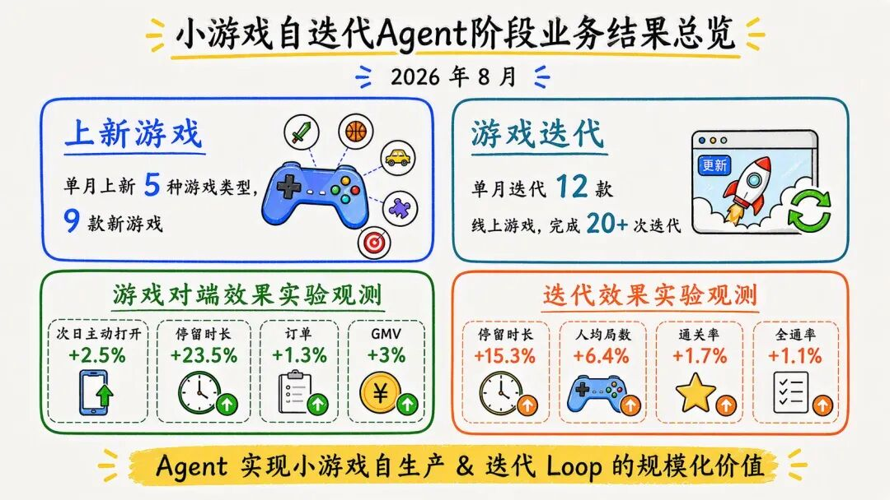
为什么要做一套自迭代的 Agent
生产侧：单点提效无法支持游戏快速上线
即使 AI Coding、生图和关卡生成的单点效率已经明显提升，上线一款新小游戏仍需 2～3 周。因为每个环节都需要人工反复确认：
从创意到原型：最快也需要 6 天，而小游戏研发周期重度依赖原型。
能力孤岛：策划、美术、代码、关卡各环节的 AI 工具零散割裂。
运营侧：纯人工无法高效同时运营多个游戏
Agent 已经能够按天上线小游戏，但这只是起点，还要可持续运营。而运营环节暴露出与当初生产环节相似的问题：
经验难以复用：不同的运营同学可能对相同的数据给出完全不同的归因，经验往往停留在个人手里。
分析不够精细：10+ 款游戏，叠加场域、游戏、关卡三级数据，并且每日更新，数据量庞大。
结论缺少验证：无论 AI 还是人都能写出论证完整的分析报告，但方案上线后未必对核心指标有正向收益。
归因缺乏统一上下文：数据、代码、关卡配置和变更历史分散在不同系统中，分析时很难完整追溯当时发生了什么。
因此这不是一个简单的单链路 Workflow 问题。生产 Agent 依赖多环节上下文传递，运营 Agent 则依赖持续归因。
如何解决：上下文流转与决策闭环
生产闭环——解决上下文流转：
玩法调研、策划方案、资产清单、关卡数据结构进入多 Agent 的全局状态，下游 Agent 直接读取，不再重复获取或依赖人工搬运。
用户中途修改需求时，由 Producer 统一判断影响范围，并逐级路由到需要重做的下游环节。
迭代闭环——处理数据驱动决策：
感知状态：读取三级报表、AB 实验快照、变更记录和版本时间线，感知当前状态；
理解目标：对齐北极星指标与行动边界；
拆解决策：判断每日迭代优先级；
调用能力：按任务召唤专家角色，强制加载任务手册和既有知识；
产出方案：产出迭代提案或新游戏立项书；
读取反馈：读取 AB 实验回流数据，到期后对照预期收益结算；
沉淀经验：将归因结论写入知识库与记忆，沉淀迭代经验。
整套系统的分工可以概括为：人定义北极星指标和行动边界，并负责审核；AI 负责策略、开发和数据归因。

小游戏自迭代 Agent 全链路架构
L1 数据感知层把前一天的数据、变更记录和游戏代码整理成可信上下文；L2 运营 Agent 判断当天最值得改哪款游戏，产出带预期的待评审方案；人工审核后，方案交给 L3 生产 Agent，并在 L4 游戏容器与模板中变成可上线代码；L5 运营 Agent 负责设置门禁、沉淀知识，并在 AB 实验到期时回收结果。完成一次迭代后，系统重新回到 L1，继续下一轮迭代。
我们没有做一个包揽所有能力的“超级 Agent”，而是把判断和执行拆开：
生产 Agent 接收已经确认的方案，完成策划、美术、音效、代码和关卡生产。
运营 Agent 读取业务报表、AB 实验、变更记录和历史记忆，负责问题归因、优先级判断和决定应该改什么。
运营 Agent 持续积累业务指标、实验结果和决策依据，生产 Agent 则沉淀游戏架构、资产规范和开发经验，职责清晰，虽隔离但可以互相查阅上下文。

小游戏生产 Agent
规模化生产：两周上线 6 款小游戏
从 7 月开始，我们用两周时间，通过这套 Agent 完成并发布了 6 款小游戏。其中最快的一款在 Agent 平台内走完整个生产流程约 1 小时；算上测试、验收和上线流程，从创意到正式上线仅用 2 天。更重要的是，参与生产的人也不再局限于开发同学，测试、PD 和运营同学也可以用自己的 idea 制作小游戏。不仅提升了生产效率，也在改变原有的生产关系，让更多角色从需求提出者、协作者转变为直接的生产者。这初步验证了小游戏生产 Agent 在不同角色的可用性，也证明了它规模化生产的潜力。
| 小游戏 | 平台 |
|---|---|
| 忍者跳跃 | 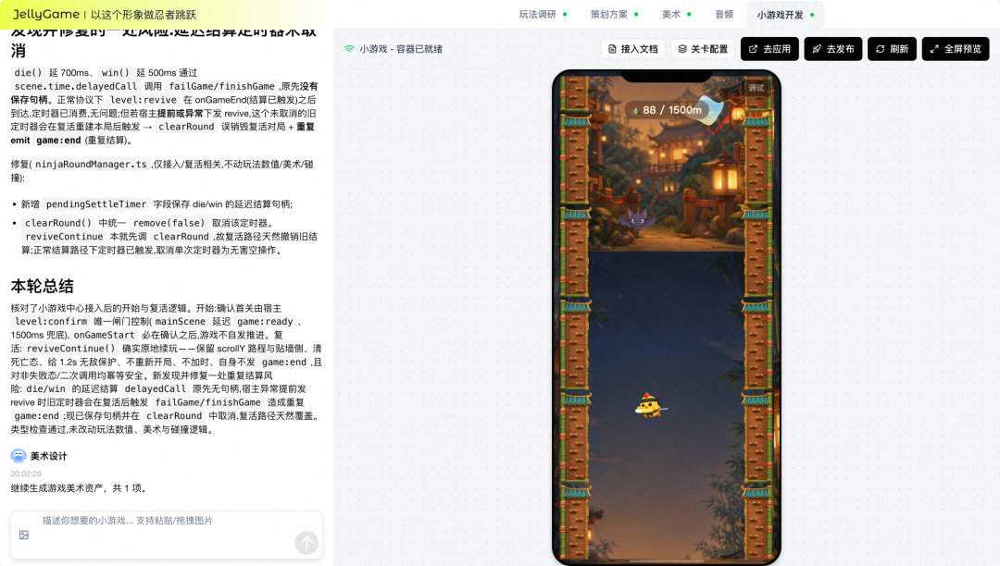 |
| 盖楼小游戏 | 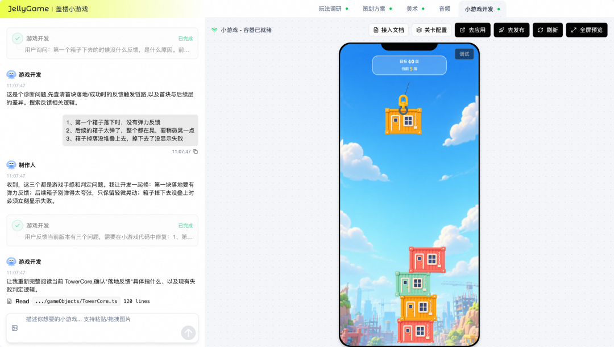 |
| 飞机大战 | 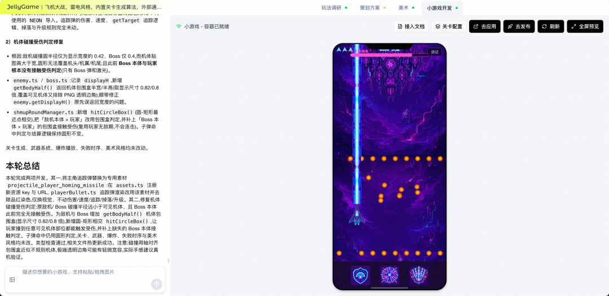 |
| 贪吃蛇大作战 | 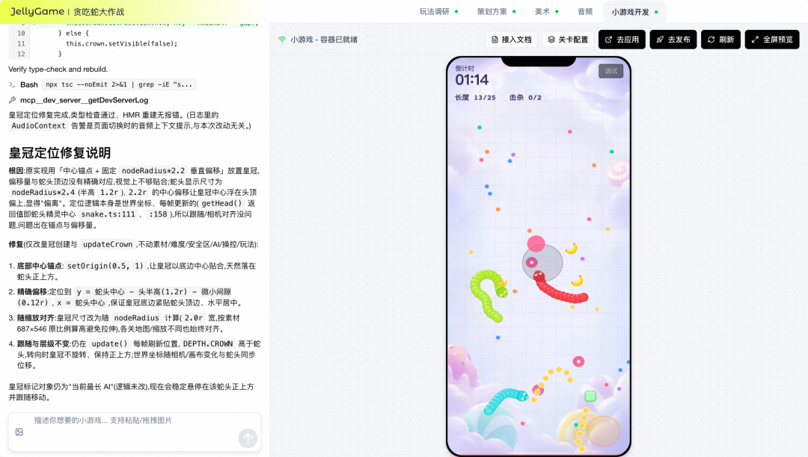 |
| 打地鼠 | 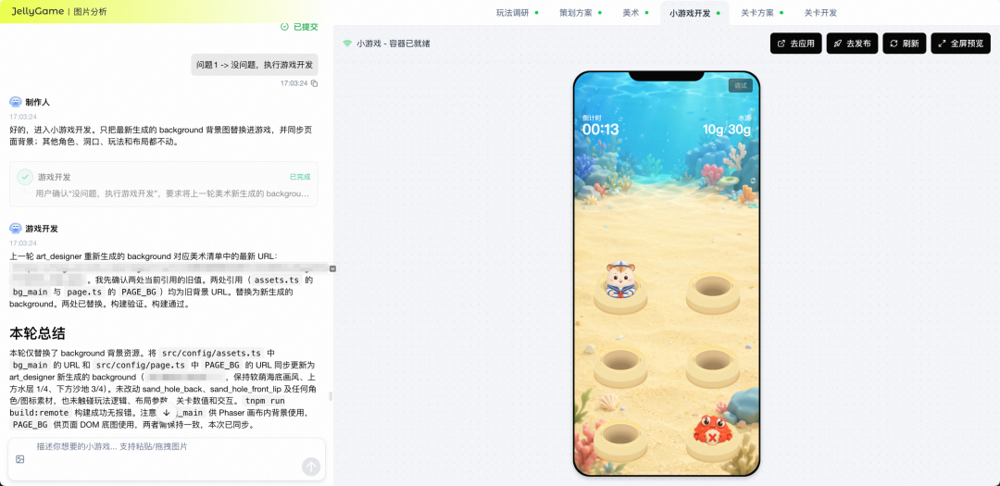 |
| 祖玛 | 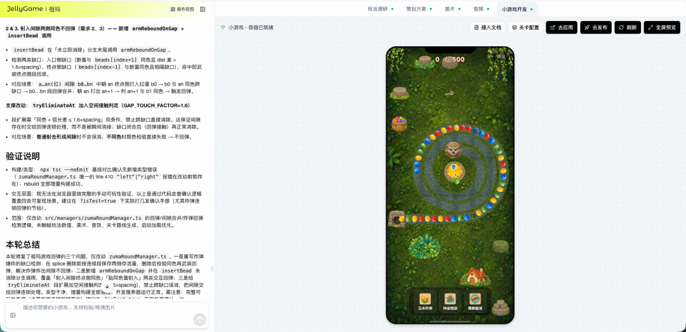 |
系统架构：Producer 统一调度 Multi-Agent
生产系统由两大技术栈协同驱动：
LangGraph：负责全局流程编排与多 Agent 协调。
Claude Agent SDK（tarot-code-agent）：负责在远程容器中执行真实的代码生成。
以 Producer（制作人） 为核心调度节点，协调 6 个专业 Agent。当用户输入一个创意后，Producer 会规划出一条完整的生产链路，按阶段依次推进：Gameplay Research → Planner → Art Designer → Game Coder → Level Designer → Level Coder。
多 Agent 架构详解
Producer（制作人）— 全局调度中枢
Producer 不直接生产任何内容，只专注于理解需求、规划链路、调度 Agent。当用户输入一个创意后，Producer 会分析当前项目状态，规划出一条完整的生产链路并按阶段推进。当用户在中途介入修改时，Producer 会动态的调整后续计划。
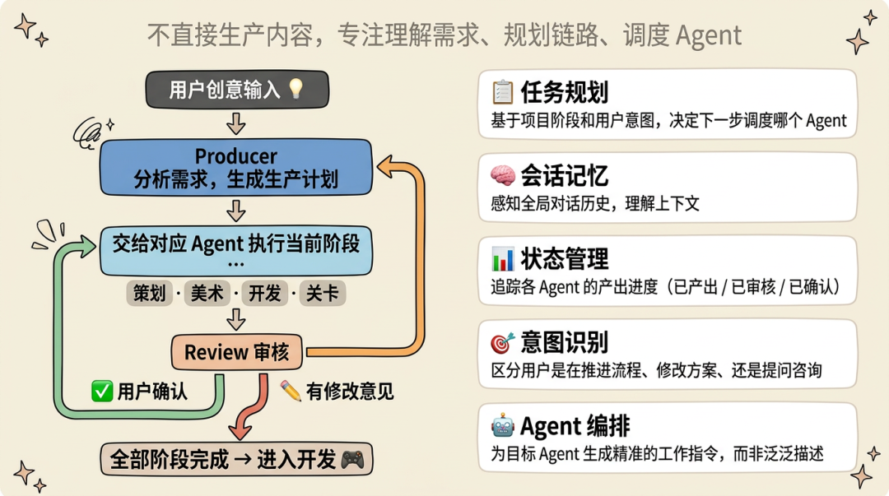
比如用户说 "新增一种敌机"，Producer 会先调度策划 Agent 更新资产清单，再调度资产 Agent 生成美术资产，最后调度开发 Agent 执行代码开发。
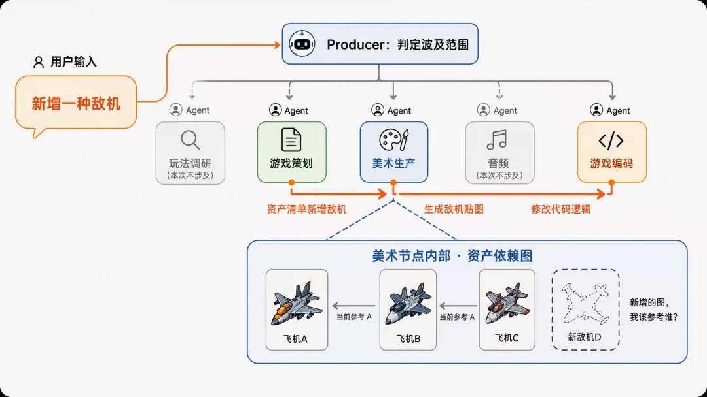
Gameplay Research（玩法调研）— 从创意到调研报告
玩法调研是整个链路的起点。一个创意往往是模糊的，用户提出 "做一个倒水小游戏" 可能对应着写实物理模拟、卡通益智闯关、解压 ASMR 等截然不同的游戏类型。调研 Agent 的核心任务是帮用户快速从发散收敛到明确的玩法方向。
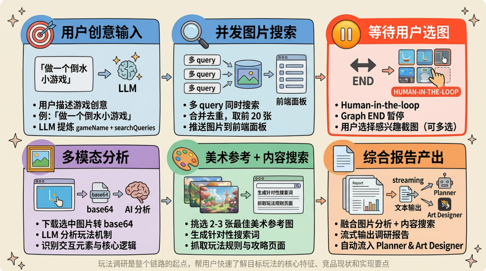
从发散到收敛：不要求用户用文字精确描述想要的玩法，而是让用户从真实的游戏截图中选择。
游戏规则提炼：直接让 LLM 分析用户选中的游戏截图，从视觉中提取出核心玩法机制。这些提炼的规则会被用作内容搜索的关键词，精准定位到详细的玩法规则和通关攻略。
筛选美术资产模版：调研阶段会从选中图片中筛选出最适合作为美术参考的 2-3 张，贯穿到后续 Art Designer 的生成流程。
| 小游戏 | 玩法调研 |
|---|---|
| 飞机大战 | 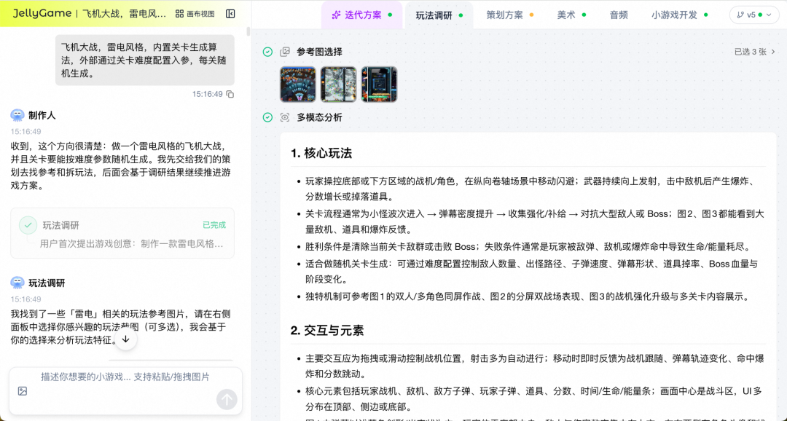 |
| 忍者跳跃 | 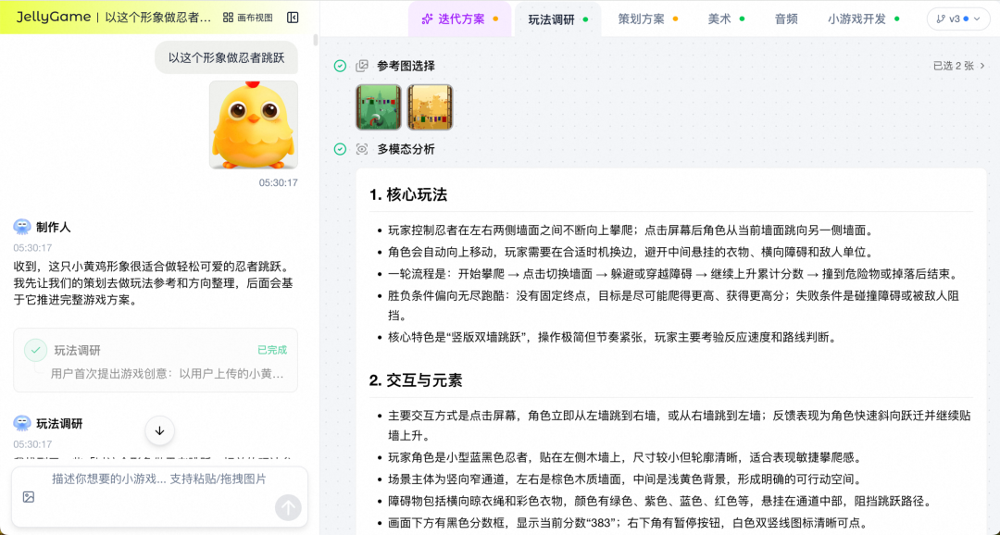 |
| 麻将消消乐 | 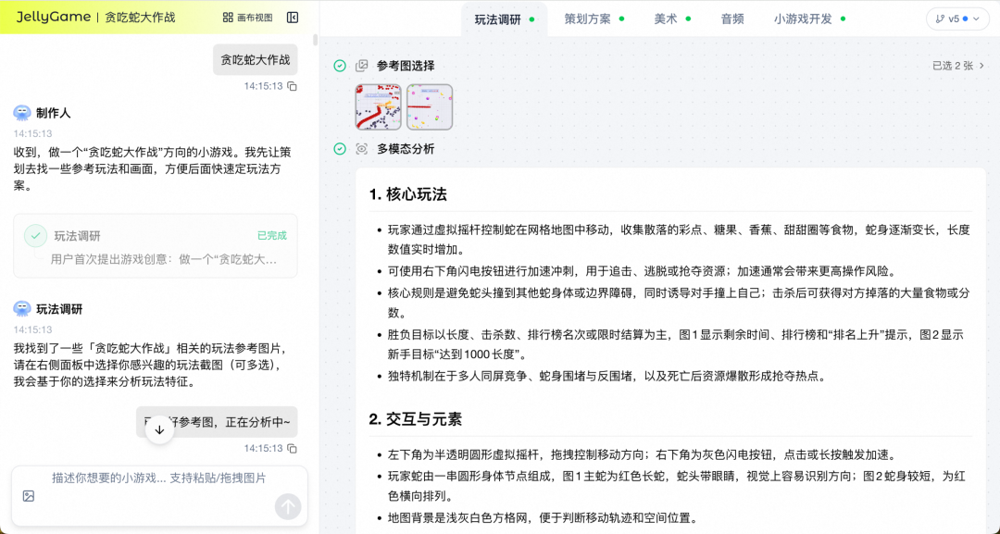 |
Planner（策划 Agent）— 策划方案生成
策划 Agent 负责将调研结果转化为一份信息密度高、可直接使用的游戏设计文档（GDD）。
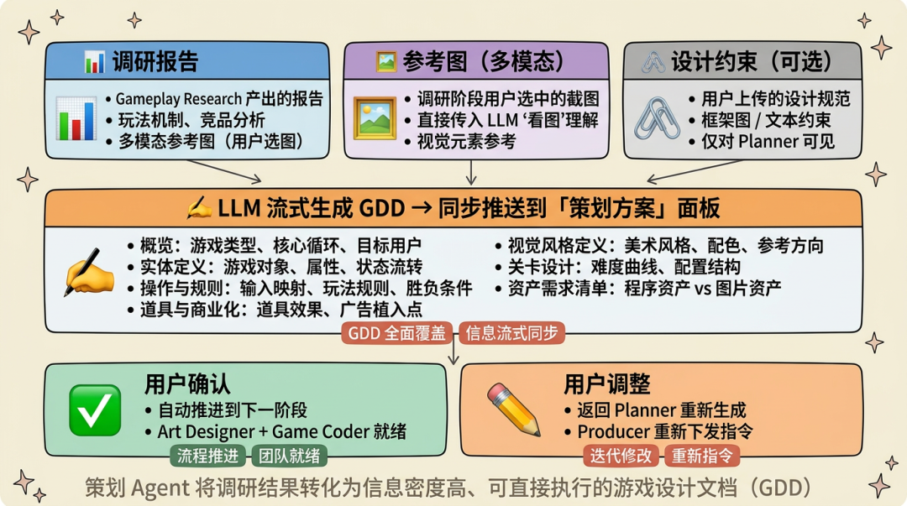
信息密度优先：GDD 中每一段描述都必须能被下游 Agent 直接消费，游戏实体和操作规则给 Game Coder 实现玩法、资产清单给 Art Designer 生图、关卡设计给 Level Designer 定配置结构。
两类资产需求：程序资产包括游戏实体、动画状态机、粒子特效等需要代码实现的对象；素材资产包括角色立绘、背景、UI 图标、音频等需要生成的素材。
定义美术风格：策划阶段会先确定整体美术风格、主色调和参考方向，比如 “扁平卡通”、“像素复古” 或 “3D 写实”，作为 Art Designer 生图时的全局约束。这避免了美术资产风格不统一、后期返工的问题。
Art & Audio Designer（资产 Agent）— AI 生图、生音频
美术和音效 Agent 共同负责将 GDD 中的素材资产需求转化为实际可用的图片和音频文件。两者都属于执行类 Agent，直接输出文件，不再多写一层方案。
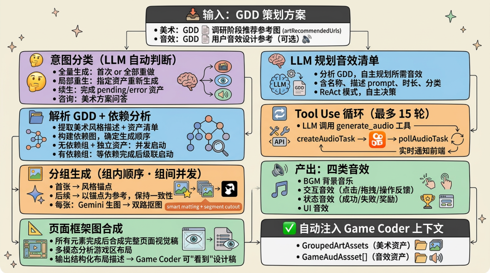
美术资产设计
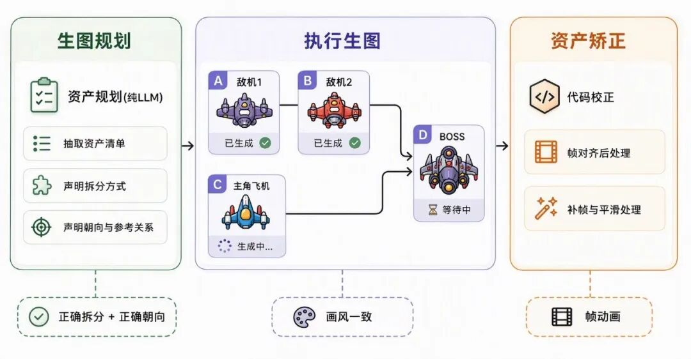
美术资产最难的不是 “能不能生成图片”，而是生成结果能否稳定进入工程。我们用了几层约束保证美术资产可用：
保障风格一致性：
基准风格 Base：使用调研阶段推荐的风格参考图；
整体风格 Style：使用首张生成的素材作为锚点，后续资产以此为参考图；
代表图 Entity：有多种状态/关系的游戏对象，使用标准态作为参考图。
页面框架图 & 布局分析：所有元素完成后，系统合成页面框架图，再用多模态模型分析游戏区布局，输出结构化描述。Game Coder 能读到页面的布局意图，而不是只拿一组零散图片和文字猜位置。
四种执行模式：首次全量生成、用户指定局部重生、续生失败资产、回答美术咨询。模式由 LLM 做意图分类，局部修改不必每次从头生成。
| 流程 | 说明 |
|---|---|
| 资产规划 | 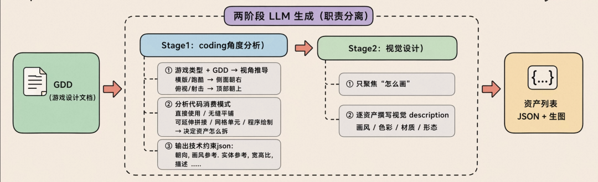 资产规划属于决策环节，由 LLM 根据游戏设计文档列出完整资产，包括朝向图、拆分图等，实现先规划再生图的模式。 |
| 美术资产生成 | 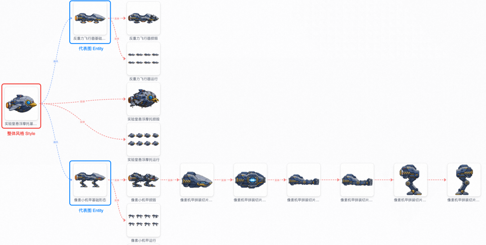 通过两类锚点，保证素材风格一致性。 |
| 美术资产矫正 | 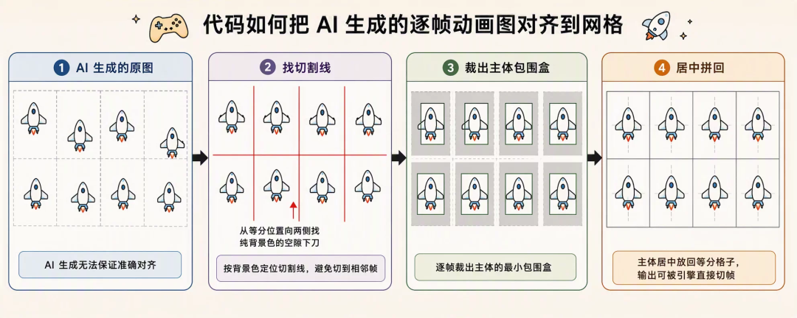 用工程能力处理 AI 生图无法精准对齐的问题。 |
音频资产设计
LLM 自主规划 + 工具调用：音效 Agent 采用 ReAct 模式，LLM 分析 GDD 后自主决定生成哪些音效，灵活应对不同游戏类型的音效需求。
按类别组织：音效按 BGM、交互音效、状态音效、UI 音效分类输出，Game Coder 可直接按场景引用。
| 游戏 | 美术资产 |
|---|---|
| 水果忍者 | 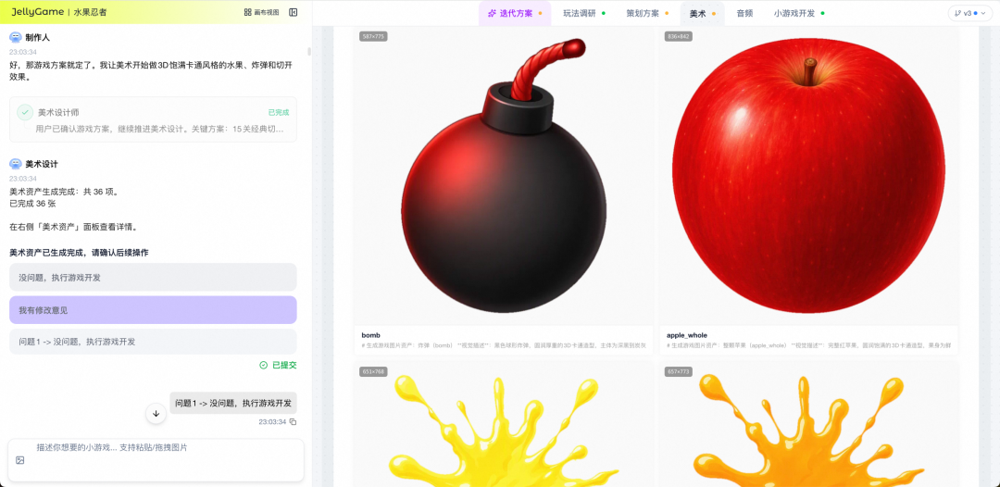 |
| 祖玛 | 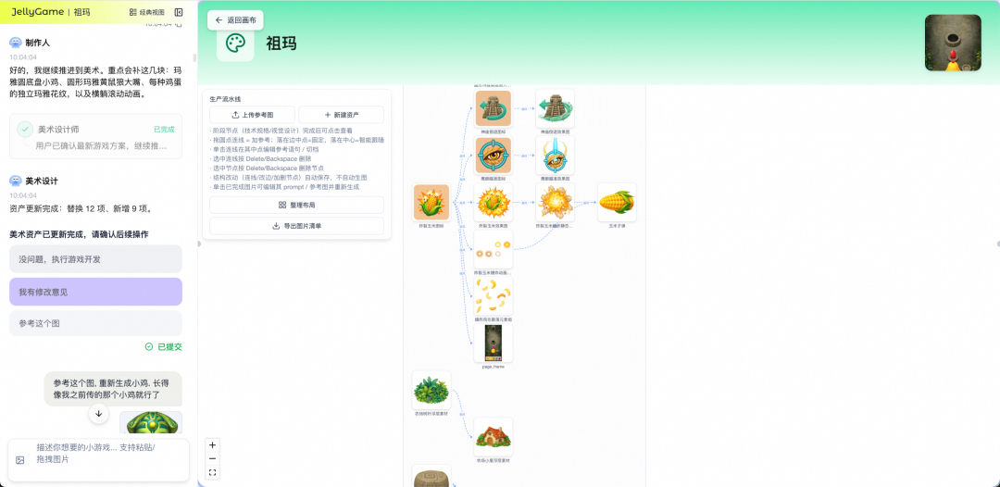 |
| 流沙方块 | 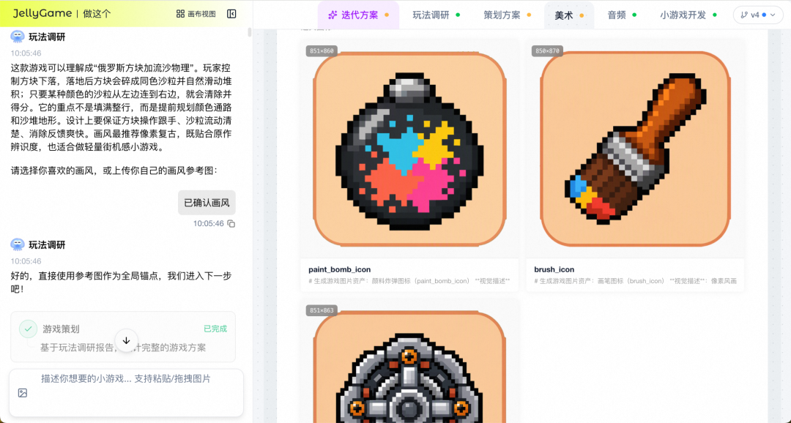 |
Level Designer（关卡设计 Agent）— 设计关卡工厂而非关卡
关卡策划 Agent 不逐一设计每一关，而是定义数据结构、生成算法、验证策略和难度曲线。
方案的核心是让每一关都为确定性产物：由 算法 + 参数 + Seed 共同生成，AI 看得懂、改得动、改完可验证。
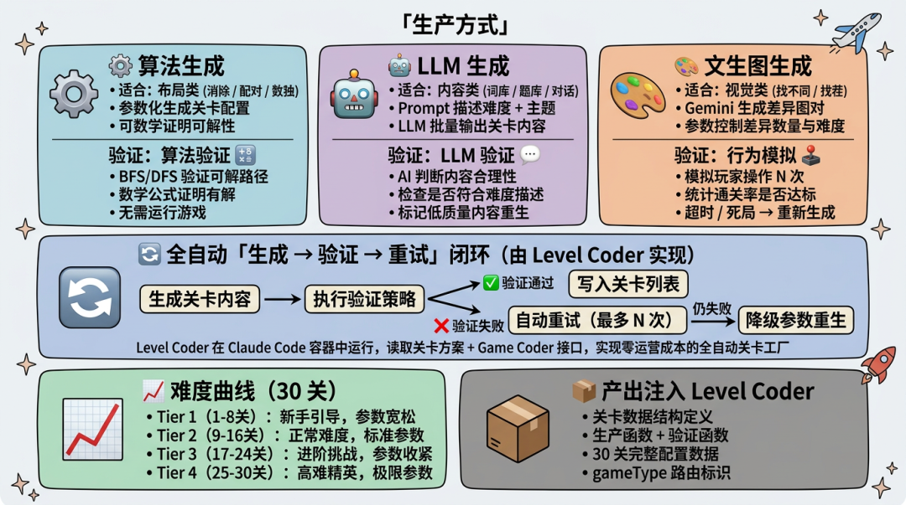
关卡生成模式
模式的选择根据两个判断：
关卡生成后是否必然有解？
生成 & 可解性判定是否耗时？
两种模式共同遵守一条 MF 契约：宿主默认只下发当前关卡数 & 总关卡数，游戏依据通关进度在本地动态生成关卡 或 直接使用内置关卡。
关卡迭代如何自闭环
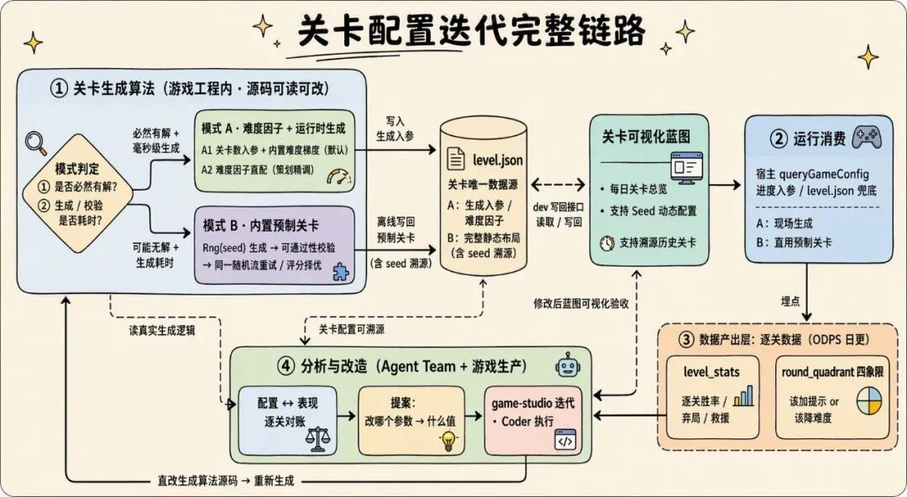
确定性生成让关卡具备三项后续迭代所需的能力：
可溯源：关卡是 算法 + 参数 + Seed 生成的确定性产物；任意一天、任意一关都能还原生成过程，问题关卡可以通过 Seed 和难度因子精确复现。
可改造：
LLM 分析层拿到真实生成代码，而不只是配置值，因此提案可以明确到参数及目标值；
LLM 执行层修改源码后，可通过蓝图可视化和 Seed 逐关 diff 回归。
可验收：蓝图与运行时复用同一条生成链路，蓝图中看到的关卡就是玩家实际进入的关卡。
Game Coder & Level Coder — 远程容器编码
两个 Coder 是整个链路中唯一需要真实开发环境的 Agent。它们不只输出代码文本，还要读写文件、安装依赖和启动开发服务器，这由三层容器架构支撑：
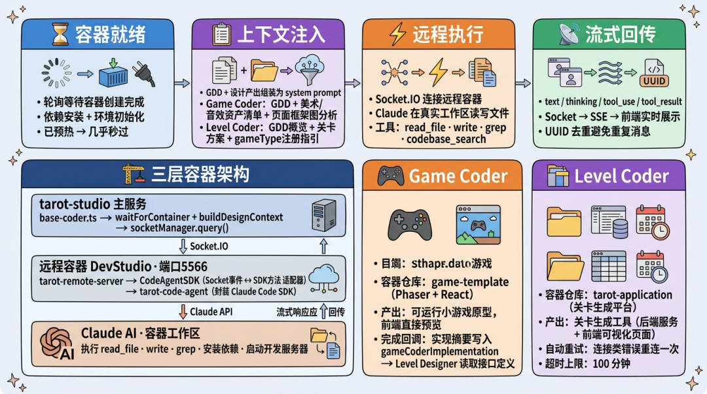
MF 场景化：模块联邦，动态可插拔
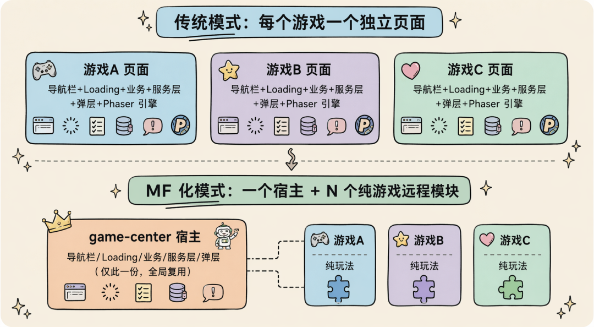
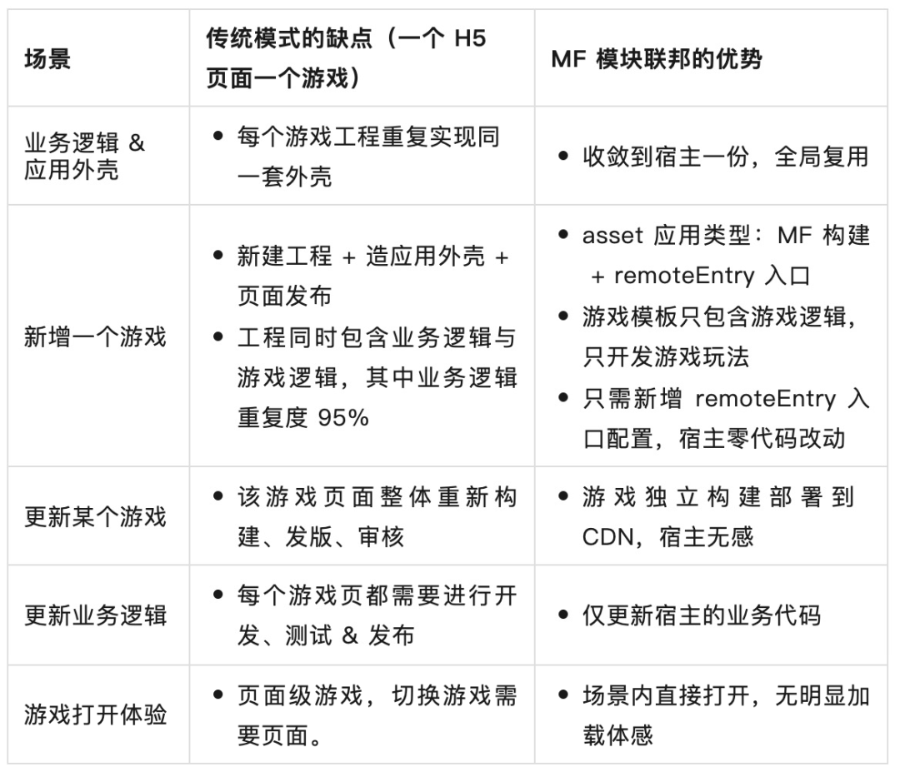
宿主与游戏的通信协议
① 统一数据查询通道（queryGameConfig）
游戏运行时需要从宿主获取业务数据（如第 N 关的关卡配置）。
协议没有为每种数据设计一个接口，而是用一个通用异步函数承载所有数据请求；
宿主侧自由决定数据来源，游戏侧完全不关心数据从哪来，只负责消费；
② 标准生命周期回调（游戏 → 宿主，单向通知）
生命周期事件由模板统一封装回调函数，游戏在关键节点单向通知宿主：
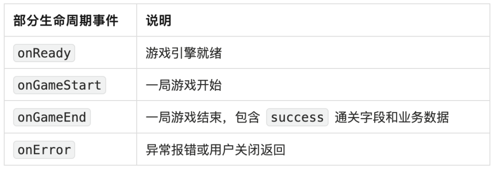
③ 双向事件协议
除了生命周期回调，游戏和宿主还需要传递大量业务自定义事件。双向事件协议提供上行和下行两条固定通道，所有额外的业务事件都走这两条通道，保障了协议的规范性和可扩展性：
app:event（游戏 → 宿主）：游戏抛出的自定义业务事件。
游戏侧 emit('app:event', name, payload)发出，宿主侧通过 onEvent(name, payload) 回调接收。
host:event（宿主 → 游戏）：宿主下发控制命令。
宿主侧 ref.sendHostEvent(name, payload) 发出，游戏侧监听 on('host:event', handler) 接受。
画布视图 & 经典视图：两种交互形态
多 Agent 生产会话里同时存在调研报告、策划方案、美术资产、音频资产、关卡方案和游戏容器。单一交互方式很难兼顾当前环节的纵深操作与全局流程审查，所以平台提供经典视图和画布视图，并允许随时切换。
| 经典视图 | 画布视图 | |
|---|---|---|
| 页面视觉 | 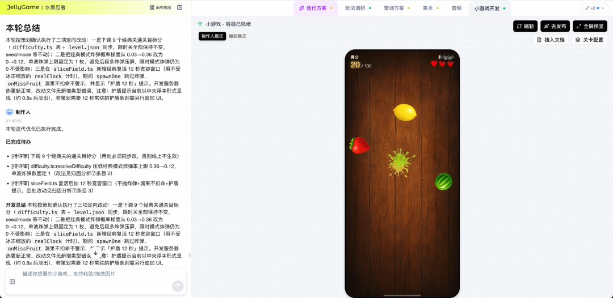 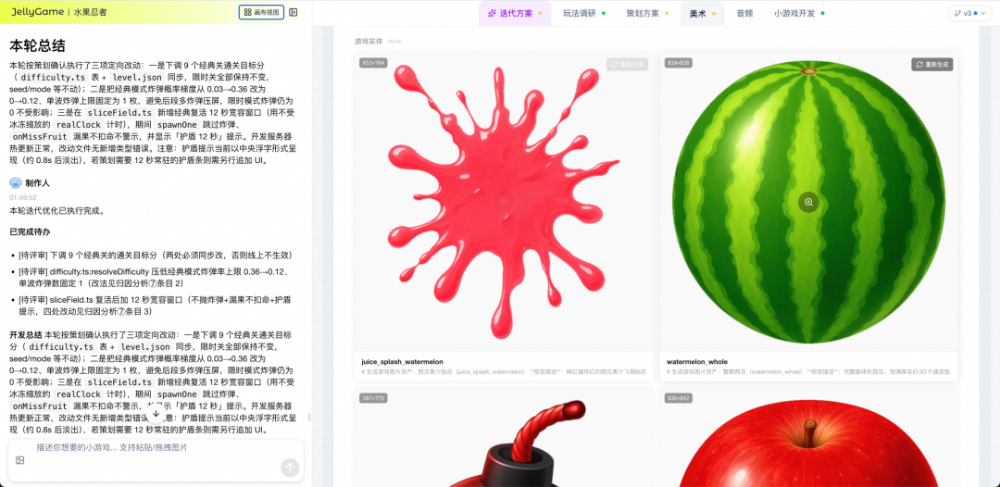 |
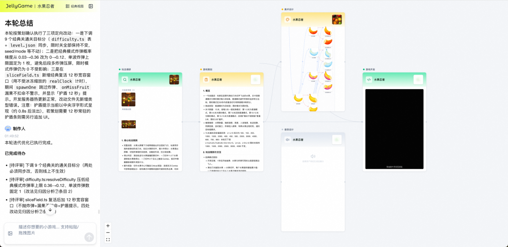 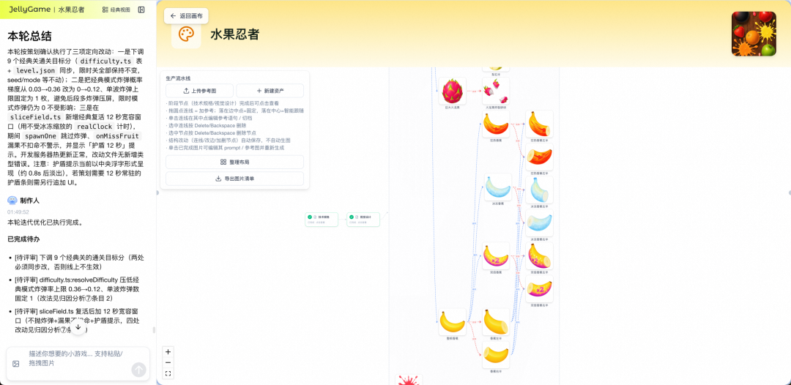 |
| 交互设计 | 对话 + 产物面板（Copilot 范式） | 节点 + 连线（Workflow 范式） |
| 信息组织 | 线性编排，聚焦单一环节 | 空间并列，展示全局拓扑 |
| 使用场景 | 首次生产、单环节审阅 | 全局审查、迭代修改、精细调整 |
关键优势与核心特点
架构层面：Workflow 与自主推理的融合
纯 Workflow 每一步固定、灵活性差，纯自主 Agent 全靠模型决策、不可控且 token 消耗大。我们通过 LangGraph + Claude Agent SDK 的配合，在两者之间找到了平衡点：
LangGraph 负责 "可控的流程骨架"：生产链路的主干是确定的（调研→策划→美术→编码→关卡→关卡编码），每个阶段之间的流转、审核、暂停恢复都由结构硬性保证，不依赖模型的判断。这确保了即使模型偶尔"跑偏"，整体流程也不会失控。
子 Agent 内部充分发挥模型的自主推理：在每个节点内部，模型拥有充分的自由度。Planner 可以自主决定 GDD 的章节深度和侧重点，Art Designer 可以自主分析依赖关系和生成顺序，Level Designer 可以自主判断是否需要提问。流程不干涉节点内部的推理过程。
Human-in-the-loop 的时机精心设计：不是每一步都问用户，也不是全程无人。只在三类关键节点暂停，其余环节全自动推进，既保证用户掌控权，又避免过度打断：
方向选择：调研阶段选图，决定玩法方向
方案确认：策划/关卡/美术产出后 Review
质量验收：代码完成后预览
两个引擎各取所长：流程中的设计类 Agent 直接调用 LLM API，响应快、成本低；需要真实开发环境的 Coder 类 Agent 通过 Claude Agent SDK 在隔离容器中执行，拥有完整的文件系统和工具链。设计产物通过全局状态自动流入 Coder 的系统提示词，无需额外的 "交接" 环节。
子 Agent 层面：每个环节的针对性设计
玩法调研——以图代言，从发散到收敛：用户说 "做一个消除类游戏"，可能指糖果传奇、俄罗斯方块、麻将连连看等截然不同的玩法。让用户用文字精确描述成本极高。我们反其道而行，先搜索、后选图，用户只需 "指" 出感兴趣的截图，选中的图片再经多模态分析提取玩法规则，精准定位到详细攻略，同时筛选出最适合的美术参考图贯穿到后续生图流程。
策划方案——信息密度最大化：GDD 不在多，在于每一句话都能被下游 Agent 直接消费。实体定义给 Coder 写类、操作规则给 Coder 写逻辑、图片资产清单给 Art Designer 生图、程序资产清单给 Coder 实现、视觉风格定义约束全局美术方向。如果一段描述不能映射到具体的开发动作，就不写。
美术资产——生产线式的生图 Workflow：不是简单地 "一个 prompt 生一张图"，而是一套完整的生图流程。GDD 解析提取需求清单 → 依赖分析确定生成顺序 → 分组并发 + 风格锚点保证一致性 → 每张图走 Gemini 生图 + 抠图 → 所有元素完成后合成页面框架图 → 多模态分析布局输出结构化描述给 Coder。音效流程上，LLM 分析 GDD 自主规划音效清单，通过 Tool Use 逐个调用可灵 AI 生成，按类别（BGM/交互/状态/UI）组织输出。
关卡设计——信息密度与可执行性并重：关卡方案严格限定为 5 章（gameType、数据结构、生产方式、验证方式、难度曲线），每一章都是 Level Coder 的直接输入。Level Designer 优先基于 Game Coder 已实现的 TypeScript 接口来设计，确保方案产出即可落地。
工程基建：三层容器架构 + 固化框架与可变内容
我们通过构建三层容器架构，并在其中预置了包含 "固化层 + 可变层" 的壳应用，让 Coder Agent 只需关注游戏本身的差异化逻辑。这种分层带来两个好处：
Coder 不用从零搭建工程基础设施，只需往固化的框架里填充游戏特有的逻辑，大幅缩短编码时间；
服务端能力完全复用，通用的关卡查询、关卡推进、道具管理、广告打通等接口，新游戏接入时无需重复开发。
三层架构各司其职：
每个 Coder 节点对接一个独立的远程容器，容器内预装了对应的壳应用代码。壳应用的核心设计是明确区分固化层与可变层：
小游戏壳应用：
固化层：Phaser + React 工程脚手架、Controller 分层架构（业务/游戏/音频）、通用 UI 框架（Loading/导航栏/功能面板）、状态管理机制、通用接口设计（关卡查询推进、道具 CRUD）、资源加载链路和事件总线
可变层：游戏对象和管理器、主场景逻辑、具体 UI 内容和交互、关卡配置数据、道具效果、资源定义
关卡生成壳应用：
固化层：Period → Day → Level 三级周期配置、通用服务接口（关卡/道具/广告链路）、前端路由框架和 gameType 注册机制、Schema 驱动的配置体系、构建发布流程
可变层：具体游戏的关卡生成算法、验证逻辑、可视化页面、关卡 JSON 结构、参数曲线

小游戏运营：从数据到决策，再到自进化
规模化验证：12 款游戏、20+ 迭代
8 月底 Agent 自运营能力上线后，我们共上线 20+ 次游戏迭代和 1 款新游戏。首周先对线上 12 款小游戏做全面迭代，其中 95%+ 的迭代呈正向效果，40%+ 的迭代为全指标正向。因为分析和开发侧都已打通自动化流程，这 12 款游戏迭代从方案产出到开发上线只用了 3 天。
| 小游戏 | 迭代方案 | 迭代效果 |
|---|---|---|
| 趣味数独所有指标均正向 | 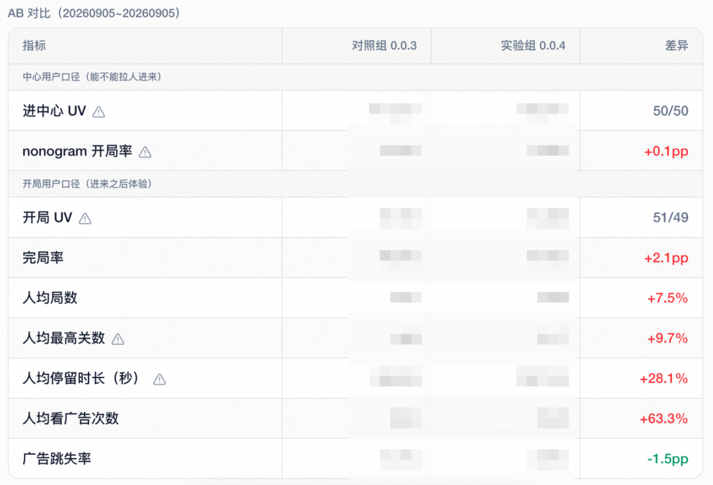 |
|
| 忍者跳跃所有指标均正向 | 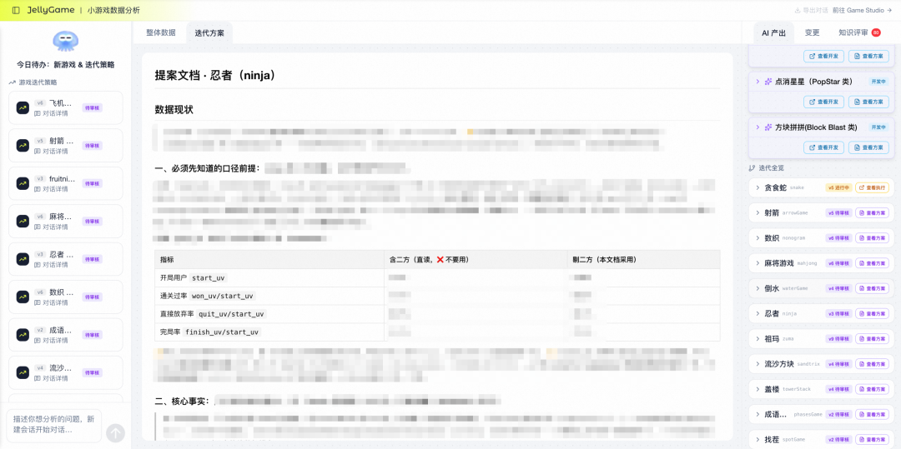 |
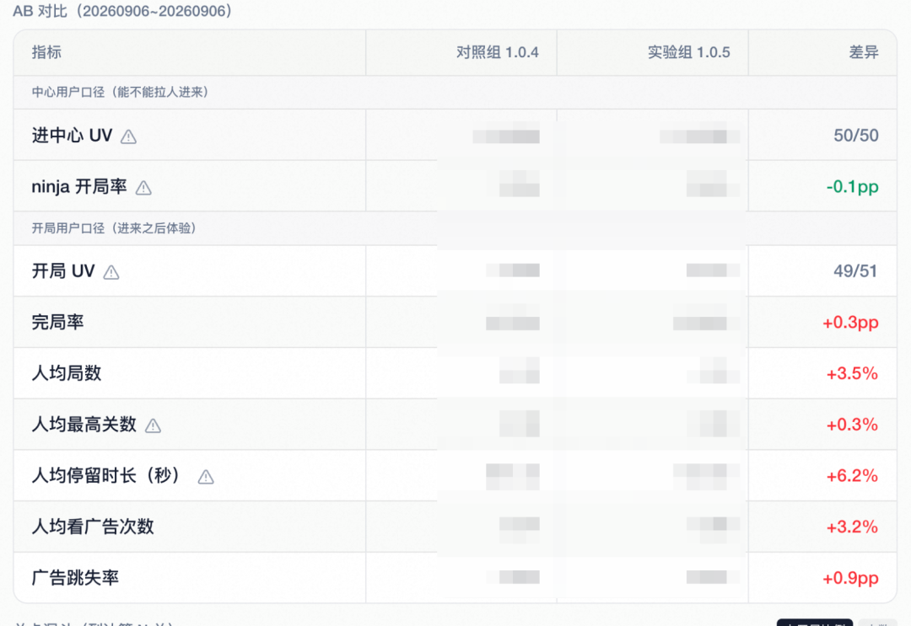 |
| 一箭又一箭所有指标均正向 | 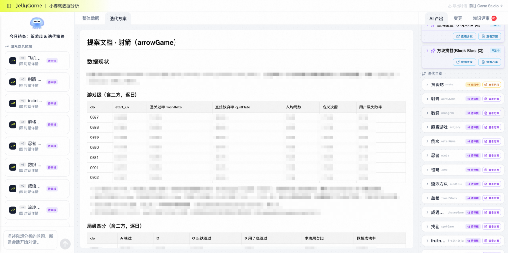 |
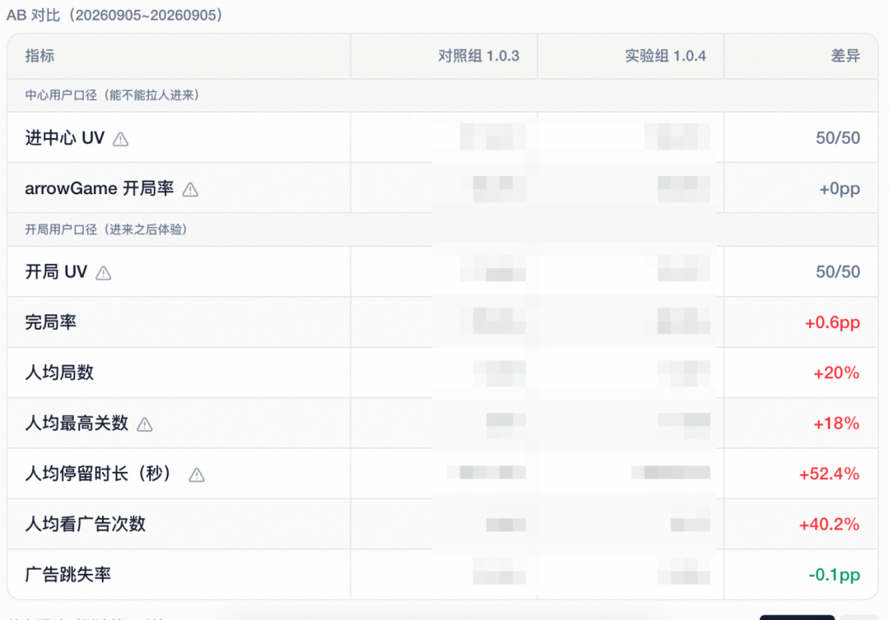 |
Agent Team：主持人 + 专家团的对抗模式
运营分析没有标准答案。单 Agent 容易把方案做得过于简单，把原因归到无法行动的客观因素上，或给出缺少证据、无法落地的结论。因此，我们选择采用 “主持人 + 专家团” 的多 Agent 模式。每个专家先独立看数，形成自己的上下文和证据链，避免过早锚定。不同任务有各自的系统 Prompt，明确步骤、门禁和已知死路，并在开工时强制注入。专家之间围绕具体方案互相论证，分歧在对话中解决，最后再由主持人收敛，不把未经处理的争论直接抛给用户。
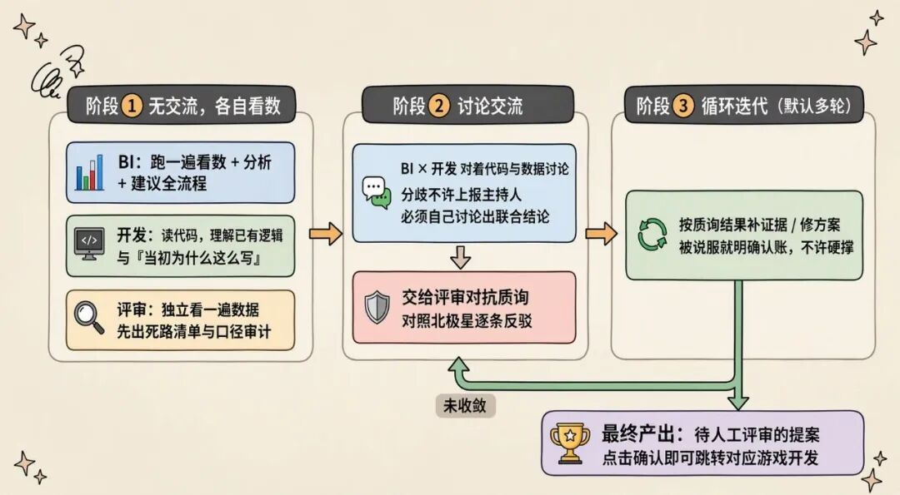
主要产出两类结果：
| 现有游戏迭代提案： | 新游戏立项： |
|---|---|
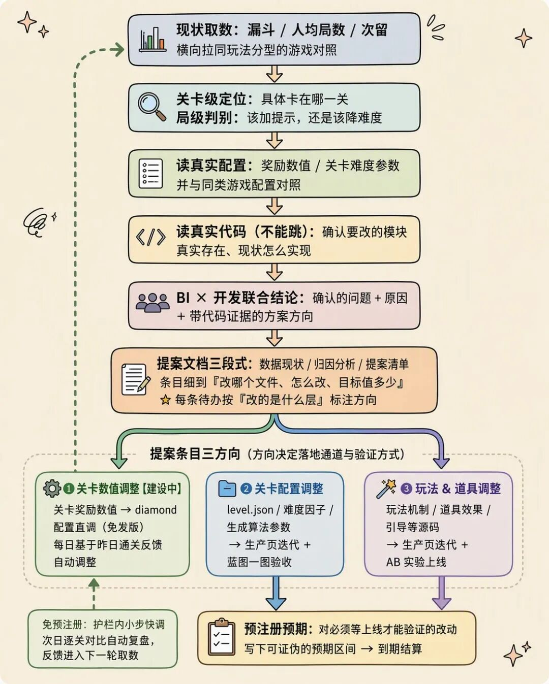 |
每日定时任务：让分析系统自己跑起来
对话式 Agent "问什么答什么"，但运营的日常工作方式不应该和 AI 有过多实时对话，而是以一个决策者的身份判断结论：前一天数据有什么变化，哪些实验预期已经到期，今天最值得改哪款游戏。流程相对固定后，我们把它编排成自动任务。
无人值守最需要避免的不只是明确的失败，还有把错误的结果输入待评审队列和知识库。为此，我们加了几道门禁：
数据整批验收：核心报表构建失败，当天所有任务中止；宁可不跑，也不让错误数据生成结论。
验收真实状态：会话正常退出不代表任务完成，系统检查立项书是否新建、提案是否更新、待结算清单是否清空。未通过时在同一会话中催促续跑，预算耗尽后才标记失败并交给人工。
自动巡检：每半小时巡检一次，回收假死任务、补跑漏掉的批次，并纠正 “看起来完成、实际没有交付物” 的状态。
统一交付标准：自动化只省掉中途等待同意的步骤。查重、读代码和证据要求与交互式流程一致，产物进入待评审队列，评审权仍然在人手里。
能力自进化：预期收益-真实数据回收
如果系统持续生成方案，它不会因为跑得更多就自动变好。我们把 Agent 的交付物重新定义为一次可证伪的 “下注”：每个策略都要写明预测区间、引用了哪些知识，以及什么结果会证伪当前判断。
数据回收时，系统逐条对账预期与实际结果，并追溯本次判断引用的知识。如果知识本身有问题，就进入后续治理，而不是只把实验标记为成功或失败。
记忆系统：分层保存约束、经验、流程和事件
实验回收得到的经验需要合理保存，也要在合适的任务里取得出来。
我们采用四层记忆，把不同性质的信息放进不同成本、容量和检索方式的容器，让相关信息在需要时进入模型上下文。
一条记忆的正文只保留 “结论 + 判断依据”，不保存一次性细节和容易过期的时效数值。每条记忆还带有治理元数据：
作用域：适用于单款游戏，还是可以跨游戏复用。
来源证据：来自哪次结算、哪个会话。
证据等级：现象、机制或未验证推断；低等级内容禁止使用 “显著”、“必然” 等强断言。
置信度与状态：候选、生效或已失效。
版本链：可以回溯到生成这条记忆时的系统状态。
总结与展望
过去几个月，我们在淘天互动业务中跑通了小游戏从选型、生产到上线迭代的完整链路。但当前系统受游戏模式和关卡类型限制，优化主要以小游戏主体为主。
下一步，我们会把生产与迭代扩展到更广义的互动玩法。系统可以围绕业务目标和用户关系，组合抽奖、社交裂变、组队 PK、任务协作等机制，生成相应的规则、内容与体验，并根据用户反馈持续调整和验证。
评价这套能力，最终要看玩家是否愿意参与、是否觉得好玩、是否愿意再来，以及能否带来业务增量。我们希望逐步把一次性交付的互动项目，变成可以持续探索玩法、理解用户并优化效果的互动服务。

团队介绍
本文作者辰霁、成禹，来自淘天集团业务技术-营销&交易技术团队。团队承担淘宝天猫电商全链路交易与营销技术攻坚，致力于将 AI 技术能力与电商业务实践深度融合，通过技术创新持续驱动业务增长与用户体验升级。
在 AI 技术能力建设上，团队围绕互动玩法 & 体验，覆盖多 Agent 编排、上下文流转、全链路自迭代、数据决策闭环、记忆系统等多维链路，持续探索 AI 生产 & 运营互动玩法，尝试把玩法创意、内容生产、研发交付和运营迭代连接起来。在业务落地上，团队工作覆盖淘宝秒杀、淘宝特价版 App，主导了多个高价值项目，涵盖 618、双 11 等大促场景，将 AI 技术能力规模化渗透至秒杀、导购、交易、搜索、用增等核心业务场景。在协同创新上，小游戏 Agent 打破研发与业务角色之间的生产边界，让PD、运营、测试等角色从需求提出者转变为直接的生产者，在提升生产效率的同时重塑互动业务的生产关系，为规模化玩法创新注入持续动力。
¤ 拓展阅读 ¤
3DXR技术 | 终端技术 | 音视频技术
服务端技术 | 技术质量 | 数据算法
附：配图原始链接清单
img-01.gif— https://mmbiz.qpic.cn/mmbiz_gif/33P2FdAnju8wR6tAicOeT6zeXrYH5MAzz2tSeQeje01Wib7IrWTbaIDF3I7NiaH4wV9FNQqiaQTiawcriaQtZjF3pAbg/640?wx_fmt=gif&wxfrom=5&wx_lazy=1&tp=webpimg-02.webp— https://mmbiz.qpic.cn/mmbiz_png/33P2FdAnju9ktXcOebovS1SbeNE5Nc6ROCUABskFSIhpDnV6snAu0BaEwUuywlUnf5dkQLtKUpwOmg9WlYwOWw/640?wx_fmt=other&wxfrom=5&wx_lazy=1&wx_co=1&tp=webpimg-03.jpg— https://mmbiz.qpic.cn/sz_mmbiz_jpg/DthwRd8vvp1JE1cibatb3e5Ws14yJ36pnj6DD3scznQPuJjRyb3t1BicwYHrO8AIibmdYIoDueQRHCJ0baib6BHlxeuG3QLhadN8bO3lzuB9E0w/640?wx_fmt=jpeg&from=appmsgimg-04.png— https://mmbiz.qpic.cn/mmbiz_png/33P2FdAnju8PWonAvnSfAGMpeE3YoiaMheQKuLem4UiaZ7XfZBWlxAE6V7h1gWKibiaTgJFYhic2cK9icSpiaS9raEyOA/640?wx_fmt=png&from=appmsgimg-05.png— https://mmbiz.qpic.cn/mmbiz_png/33P2FdAnju8PWonAvnSfAGMpeE3YoiaMh4VoKj8BNXvBKD7gmWMIVHVCTFwpicOzsEO86cHYQfhz705RmljnolKA/640?wx_fmt=png&from=appmsgimg-06.png— https://mmbiz.qpic.cn/sz_mmbiz_png/DthwRd8vvp3ZHYXtmCFjgkPFmibNjgeYwppbbjzWdXqqQ67W4Dnr0F9ewBjEyQ0pADJgYP0ib5uiaX21MFiaj4VZlveKHicCoiayIy7TgOq4wt2PY/640?wx_fmt=png&from=appmsgimg-07.png— https://mmbiz.qpic.cn/mmbiz_png/33P2FdAnju8PWonAvnSfAGMpeE3YoiaMhAKxzUDHXniaXwPEesvQm9ore8gcW76d2WaReb3GPBX0SQ57suvSwAYw/640?wx_fmt=png&from=appmsgimg-08.png— https://mmbiz.qpic.cn/mmbiz_png/DthwRd8vvp3NPicCeQa9lkagSFey19D4Ep28NxL1uZv5475eWCVn4lXrwBVhBz7gvsluA4QhpIb44Rwoya2SVpibCf3JKgDicdmtk0Qlc67wB0/640?wx_fmt=png&from=appmsgimg-09.png— https://mmbiz.qpic.cn/mmbiz_png/DthwRd8vvp1ZxBVBpCLic4b5w7Jzyqn1fK2IczARuiauw7yYWsM3fg1VfvY17hkvBKwNeoAs5DBfVyFAptprQ5MSPHh6183OkKK3Hp5ty00w4/640?wx_fmt=png&from=appmsgimg-10.png— https://mmbiz.qpic.cn/mmbiz_png/DthwRd8vvp0q9nA2icPT8qJM15CXFNzLrfibicdc59BHz4OeNGJNjrFEreUWAoPV78BiateQOxLKoBicNoz19WbTS6iaRPLCZKLibgmBQ0ga5jZW9U/640?wx_fmt=png&from=appmsgimg-11.png— https://mmbiz.qpic.cn/sz_mmbiz_png/DthwRd8vvp3s4PuiaC3Ivx02CAozxXW3AsY1DasL3FNNCMtdwtt85360v9s58JKuYCy0aoGJiaYaSZAywYLNtfhJDuiaAvp4OYIWCstXGOQ2AE/640?wx_fmt=png&from=appmsgimg-12.png— https://mmbiz.qpic.cn/mmbiz_png/DthwRd8vvp1b9RVibJ4osc5utd5YhT3mmfLGLh6dKvREicUfXFniaawqXfCISQltuRAggHsEu2KzNhbNxKy0plONW6NL3j2iahCBK1A4fMPZyds/640?wx_fmt=png&from=appmsgimg-13.png— https://mmbiz.qpic.cn/mmbiz_png/DthwRd8vvp3MUs4cK84Yv0btIicVrPYXiatYRa6S6QUPcRhfEtkCW5GJwuemjeA3VPjfquxtxpD5IXCXyXlBIniaGMVUtLcUZicVPW2e33Of2kc/640?wx_fmt=png&from=appmsgimg-14.png— https://mmbiz.qpic.cn/mmbiz_png/DthwRd8vvp2OhHYM26eDVG4pPfGTCv2ZFVRxQwSCs2h3CzTLUqtUOBhib7VhcqDDtXIH0cQHqxWFFpUCmtXWOSfwHFsEDCK5CoYlXqCELuQc/640?wx_fmt=png&from=appmsgimg-15.png— https://mmbiz.qpic.cn/sz_mmbiz_png/DthwRd8vvp0eUorKahqx31DLod78lbhklPaMKcgfMfOla1p9hTmqgzOBPia9kWD7R85pg5bIq2NxdEk0zoibBG8AbMrKl2VuMSbuicnxCqGnQc/640?wx_fmt=png&from=appmsgimg-16.png— https://mmbiz.qpic.cn/mmbiz_png/DthwRd8vvp2ZOh4v4rlGQTSdrKq2j1OSkzx33uWfYNiamuq2KX07ybKngibvY3ibIGzGLPbrfvnMmb8mhpZu9dm7RX4zHgkG7Gz45YViauzE554/640?wx_fmt=png&from=appmsgimg-17.png— https://mmbiz.qpic.cn/mmbiz_png/DthwRd8vvp305w6mhpGiaib77pvicq6XeZk8elzUXlkXzBrvXZYcCibI3NomCWV0ZibRg4xOWicSNK5htscz7g3HqNz5wnKgZQcH9e5ck6KbibKcro/640?wx_fmt=png&from=appmsgimg-18.png— https://mmbiz.qpic.cn/sz_mmbiz_png/DthwRd8vvp1H1kkCzwAKHy2A03QIRytEMSJ5BZJJCrASBpcfubx8sr3jFlsfJjf9p02OEz7fZhse7kuDPCxwdeibialrA1JIMXskQTibmBx58M/640?wx_fmt=png&from=appmsgimg-19.png— https://mmbiz.qpic.cn/mmbiz_png/DthwRd8vvp29H0icsX8iazUudHXo3mEz3vHe6oslAtCgc8jqMlaHibvJdkPOxUU3hKkWcp4TWZ9b42uEiam2NQvkuoMAjQIb3WO9iciawxh6HSiaFI/640?wx_fmt=png&from=appmsgimg-20.png— https://mmbiz.qpic.cn/sz_mmbiz_png/DthwRd8vvp1HvaV8ia1PbIsb4TT5ZQCJngGDRfOx0zEiaQxaicTkHl834MGIJN02xNlIYLbgYOtSKVDw3e18uSrrrLK8OTBxYtxEAAicgicfyugw/640?wx_fmt=png&from=appmsgimg-21.png— https://mmbiz.qpic.cn/mmbiz_png/DthwRd8vvp3A6kSHJgiaUe0ko7QvfZWiazHeAbefGgG4ROAicYr9RfLcicfk55TK3WLwDjZdYq5icicNiciaYv5RkaCxffU7y0zLu16zictYS9Glgp5Q/640?wx_fmt=png&from=appmsgimg-22.png— https://mmbiz.qpic.cn/sz_mmbiz_png/DthwRd8vvp0fnQjfhFnUJImcFoiaC0UmEtLsVUfzYFOROViaeA3pKdNSsutO2oBGQ0EYYiahj0iaovvQJibAN2OicFdOSicd2kRIt4hnRkiagyQzqsg/640?wx_fmt=png&from=appmsgimg-23.png— https://mmbiz.qpic.cn/sz_mmbiz_png/DthwRd8vvp2fBjWQZKZ54cBo6Q4OpEERQ9k1mzW2q1uyWeEwRTY8jh1llMVQ3YwYdXXHBjvv0TXgyPqKO0RDS9QR7FTomLaEubYEsfg87ZE/640?wx_fmt=png&from=appmsgimg-24.jpg— https://mmbiz.qpic.cn/sz_mmbiz_jpg/DthwRd8vvp1ndpPsynLicxFjkdR6icscDaFms87MnDnbOGK190Nr4zxstXKxjPdFa7p1KzwVoic2qmQVX6GGtic04IMictuZkIGkZxSNqNklNqiag/640?wx_fmt=jpeg&from=appmsgimg-25.png— https://mmbiz.qpic.cn/mmbiz_png/DthwRd8vvp2DS401QBPhiajPnpElHKu7BKB58D4ZQ6YlmLicibSPuHccBZOlBf8WtDQDklcZPvZcLMoq5F1mdaSiaUC0DKEOv7qxVEQDrLAkbo4/640?wx_fmt=png&from=appmsgimg-26.png— https://mmbiz.qpic.cn/sz_mmbiz_png/DthwRd8vvp2TQmVb8SYXWK7hJPCCYym1JpAiaJGTqrZrEFWOZbQh1Y3nKqySZmS2PdoeIy83fGAKJy1MqCbD4jFxSL8MZczM7ZRhXDMdRnvs/640?wx_fmt=png&from=appmsgimg-27.png— https://mmbiz.qpic.cn/mmbiz_png/DthwRd8vvp3BDficiaOBe1wGiaZ6B9QPZSXA6Cr0vmBwA8OPTQwKds2JFKXrTk1YMOXe5QaFMyMTy2dtKnycHyoze0hoIFiaMx2ZYbbLnMZlU64/640?wx_fmt=png&from=appmsgimg-28.png— https://mmbiz.qpic.cn/sz_mmbiz_png/DthwRd8vvp2Y6kiaHtwibzYSIp7QgEPV2OuxXIPzvicCfUcwoVBuebmibsxWpT3FGfr2rzZwGic0jKduPLics7uRblxXhe2krQBAl0MCauUbK3EibY/640?wx_fmt=png&from=appmsgimg-29.png— https://mmbiz.qpic.cn/sz_mmbiz_png/DthwRd8vvp2m2icQMeVIq84UpMoQVTjBAMiaicju1KgDnciac1cMRIx5icBE8m9ZSicHyxKj5EBd2pcUFvHdd7ic4lLFPPXQoShbcfHhc2gbhW1va0/640?wx_fmt=png&from=appmsgimg-30.png— https://mmbiz.qpic.cn/sz_mmbiz_png/DthwRd8vvp2MQnVdYmibeksOwYgLglM4LqfZDpiaKqzPIBibEZucZjjoIxEWgywqmtaKp4n06j3P2ytic194xSAszuKe5LVtWN83sOI2nRdiaUQw/640?wx_fmt=png&from=appmsgimg-31.png— https://mmbiz.qpic.cn/sz_mmbiz_png/DthwRd8vvp22WoUCSjHBYicIL0OHD3hwzE7b2yS4jhicq57dNqIqXpUGePEtXZI4DiaWlLubnAFHib231aajNwrXqsnmTTMAFTMhs4hs1PEloBE/640?wx_fmt=png&from=appmsgimg-32.png— https://mmbiz.qpic.cn/mmbiz_png/DthwRd8vvp1YsaOUKZicZgawXmb6j8tp8IBZnHzdCuL0bw0YgGAiahrcgRbRyTR1Hy5Ow8lOjE4DFPGg7zjyu0uE8dYw8icd1wevuxUvzvzdibc/640?wx_fmt=png&from=appmsgimg-33.jpg— https://mmbiz.qpic.cn/mmbiz_jpg/DthwRd8vvp0l0kdTfsufWCNJbsoFdULd6JRUmzkuiamr4yFtC1HiaFjjPhN0b2PMPRHu23QlO4rH9W0SVw6ZicX1iaCtYRshn1ayibM4iaZ76uIiaE/640?wx_fmt=jpeg&from=appmsgimg-34.png— https://mmbiz.qpic.cn/mmbiz_png/DthwRd8vvp3yRfysLM4sXv7l8PT76OYCoFpLABYfr5y2sHB7q8tjic6kdibNFuyibF4EzQj0y8DqDRGiaevuuRlyxlyXGICQVuIobMyiatd1nHKw/640?wx_fmt=png&from=appmsgimg-35.png— https://mmbiz.qpic.cn/mmbiz_png/DthwRd8vvp3M5vP2mTKZibquClssnnlCKr22j5bwsd4PXPKxkqsUdmib4QzicbyHSrWufAPMp5HlZiaEQuRFffjeQEMukficoicktsz1KIl0eKF2k/640?wx_fmt=png&from=appmsgimg-36.png— https://mmbiz.qpic.cn/sz_mmbiz_png/DthwRd8vvp0RnvYdGar2EYV0JagoHuTxwbSagVh2a1ekdT6PskibzIoTD9g3CdG3wm1iaa5HVsmu07lJkqU9ibUXqj0aibhb2cgV95ibLNtgOhSU/640?wx_fmt=png&from=appmsgimg-37.png— https://mmbiz.qpic.cn/sz_mmbiz_png/DthwRd8vvp00b3mnIFVsM3icpdAYDwjpc0FmgSVJ7ln6jSTmTYQOEDzDEHSLNcQILSw2OUVRBVfsKGKzK5jbSD4pGiaAgaiaCM137iatF0wo9tg/640?wx_fmt=png&from=appmsgimg-38.png— https://mmbiz.qpic.cn/mmbiz_png/DthwRd8vvp0qNWkCKdsa0pPckVc7bdtB4gHcmgicDeQPticMX0Sx1neicpArMRMNSWwHxSDajKdaFoxLIu33m4jg4iaHHbUcLGbtL4icBcg7dtKg/640?wx_fmt=png&from=appmsgimg-39.png— https://mmbiz.qpic.cn/mmbiz_png/DthwRd8vvp2G2dHQLJHCER8RaccEvmicLEyU5YLZx5M5YgrfMkRgWvLicBPHGib9DsGW5ho1xY4elIP7UtRTib38101kNwXQPm2d0s7YAFY6EHI/640?wx_fmt=png&from=appmsgimg-40.png— https://mmbiz.qpic.cn/sz_mmbiz_png/DthwRd8vvp0wmE7GknhnEvN4RWtm1uafGXrCLgFVVOxLnibaEMlNFwgTPdqkhYosJK90v16EBteyKAkliauo2oXgmEkIt0wM9jXqADnUtqzHo/640?wx_fmt=png&from=appmsgimg-41.png— https://mmbiz.qpic.cn/mmbiz_png/DthwRd8vvp06Y8KDNRj9tYFibcHtI6Gia1ogicRbOJetbIqUiciaMUBgYEqPxhrML7XlUbWExQzlgibkAbzKMHy5MMv6yFxfnUePmdGFXr6OHPCNM/640?wx_fmt=png&from=appmsgimg-42.png— https://mmbiz.qpic.cn/mmbiz_png/DthwRd8vvp1GGNdVRV6ouAwUI8maMiaS0ADXaXibORZK7YzK4jPo9iasS0XsFVdxTFMdaQ6Dq86hXercqGL5YsIgn6Pws7kE2oRZk8QibStDzWk/640?wx_fmt=png&from=appmsgimg-43.png— https://mmbiz.qpic.cn/mmbiz_png/DthwRd8vvp3sd3deBgk75xuiaqWnicS4Y7ibJrNXp7yeVKnaia6gVK6P0icMvYHq9xAvAuB4EaKwTnoeSy5hrINhKra5IL90wRacNrCJHpfA6xeE/640?wx_fmt=png&from=appmsgimg-44.png— https://mmbiz.qpic.cn/mmbiz_png/33P2FdAnju8PWonAvnSfAGMpeE3YoiaMhkTk8GJa2bw2cicJNGia8eBEBxXGsvONJMibYcMPWCkB41EiaQ0Ihx0yXXQ/640?wx_fmt=png&from=appmsgimg-45.png— https://mmbiz.qpic.cn/sz_mmbiz_png/DthwRd8vvp1o2omftXJEm2zBN4A4ZLAlyW5Tt6DNgTyBdLvkkajzicccicGXSic6ZTD1EicZI6ctgib6VHBicX2dgzy0cSYrPnqgCyuyOsayhwG64/640?wx_fmt=png&from=appmsgimg-46.png— https://mmbiz.qpic.cn/sz_mmbiz_png/DthwRd8vvp35GwaLgM5x2YUwwHNJbicGEaRM6J7ibTQkuzFXIGzuDIsD88d8DcAgpqf5cnGmwdcPW9b9icuiaLofcj3CgcVW6fGNWc4uAr0yicGo/640?wx_fmt=png&from=appmsgimg-47.png— https://mmbiz.qpic.cn/sz_mmbiz_png/DthwRd8vvp33bBkKxSecdMiao5YIPtib5J6K9O55yOYxlg0SQBJXhhDL6hCbbibMDStPsh4AInUfLIiajibNzxBGhzib1xYibTfiaCz5Mib8DCpib0FCk/640?wx_fmt=png&from=appmsgimg-48.png— https://mmbiz.qpic.cn/sz_mmbiz_png/DthwRd8vvp1v36KNYeExgl5HFnUHLyIJ5DzGhnAKdEdkC3sDauD3z2jX8lxDwmtZtLUsiciazuLNPEMlmg76ialrRxylTsaarjbZYJ58IgJMKE/640?wx_fmt=png&from=appmsgimg-49.png— https://mmbiz.qpic.cn/mmbiz_png/DthwRd8vvp1EcKl2TPtfFLTv71ljq1geUHStZiaBuSCV6AeGw9xnUqECsa9nBLlBuxhlofIX7mtKrec7Gf1ICxROgmTI4aKrbo4L7Angsia18/640?wx_fmt=png&from=appmsgimg-50.png— https://mmbiz.qpic.cn/sz_mmbiz_png/DthwRd8vvp1ZV5fPMNBTrTicM1VESB5pI7ShpE9azjpfvH6Wzlich98U4GuYCYQk4vu6ovaTicKVgjLs3HmVeQRLvmjBeuV4MXQgTTOVkm1IrU/640?wx_fmt=png&from=appmsgimg-51.png— https://mmbiz.qpic.cn/mmbiz_png/DthwRd8vvp0GvPwDK7F7taFsBianqjU912iaKEr5qUXkDwpLzOmowABXAWZL8ice5yyESht7sCicpqHJ7NUekFP0sDN8ZAz0S6R2aqsU8xI3LG8/640?wx_fmt=png&from=appmsgimg-52.jpg— https://mmbiz.qpic.cn/sz_mmbiz_jpg/DthwRd8vvp2Azb8ggJxGSJCVHCibK6SPWSs2pBLQPAYu0SXnSvyBiavKc4eKQlvZibwDP295G3fLY30cTicPwp7uA2ZZicXic3bHBFiahU88SJ5fkA/640?wx_fmt=jpeg&from=appmsgimg-53.jpg— https://mmbiz.qpic.cn/sz_mmbiz_jpg/DthwRd8vvp0AfNP68aeKBAIxRmtrxJ3mzcIjNMymWvCLFjLxH1KdcDiaayafgtScGmRgusY1gKLaITNuYIrINw8MO12sPlys7z00HB7Voru0/640?wx_fmt=jpeg&from=appmsgimg-54.jpg— https://mmbiz.qpic.cn/sz_mmbiz_jpg/DthwRd8vvp2YvBzvrjHxLyqSEJSXjiavjYQCIabPBoCoYC5jDYlF7OM5S1RXjeeyO7wicU127kYkiapyt0nbQUmbXmv9Xicryj0nDp6ibnJfGmQ8/640?wx_fmt=jpeg&from=appmsgimg-55.jpg— https://mmbiz.qpic.cn/sz_mmbiz_jpg/DthwRd8vvp1J8wz3kjia3yMxdpyia7FJlaIhltTLnsdYkm6WaI2MaKnh5xnEknibXPdnciaakPVycUHicfl1xgMRYtrsX8JXkHJVAXjphdhfmBBY/640?wx_fmt=jpeg&from=appmsgimg-56.jpg— https://mmbiz.qpic.cn/mmbiz_jpg/DthwRd8vvp3tRoRfjvsTQBLjlFniaI3RJQibJl5MggcDVxMogTibVDeoPel2TKiaVfqp6z0ibR70e7qbTa5nVjEeib6JrjC9L8bU7AH6IXiauicrl8k/640?wx_fmt=jpeg&from=appmsgimg-57.jpg— https://mmbiz.qpic.cn/sz_mmbiz_jpg/DthwRd8vvp3ibSmnB2N1EYnxdGCaRfoo55U8jRQYXiazdp3WUpu1eHJjOR8DqBMoOoRJM4MDNaQsxpQ3ricky2IV86x5rYwPCpoLS60bsrOTyw/640?wx_fmt=jpeg&from=appmsgimg-58.png— https://mmbiz.qpic.cn/mmbiz_png/DthwRd8vvp29037J4NzueWBGJ2VHU3AY6XA9yL8EtqgDq3sst0fSck4UicCLPMG6qsa50xPaMjtdLfB0odQqTWJ1s299jQUTMETmrLxbZXfc/640?wx_fmt=png&from=appmsgimg-59.png— https://mmbiz.qpic.cn/mmbiz_png/33P2FdAnju8PWonAvnSfAGMpeE3YoiaMhiaYDH4qKtXibfuNQofj58j7w9S8icvKz0Gq76dOdD0tfvcNjokfYibbKxQ/640?wx_fmt=png&from=appmsgimg-60.png— https://mmbiz.qpic.cn/mmbiz_png/33P2FdAnju8PWonAvnSfAGMpeE3YoiaMhZMffic8JnvvLIgyJ9CUGzAiaiciaG61AHjhJSiaA5tmQZRSVFNRf3iabgibww/640?wx_fmt=png&from=appmsg